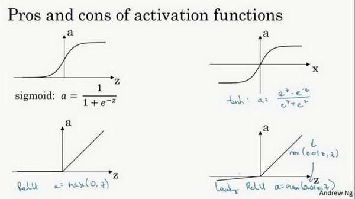
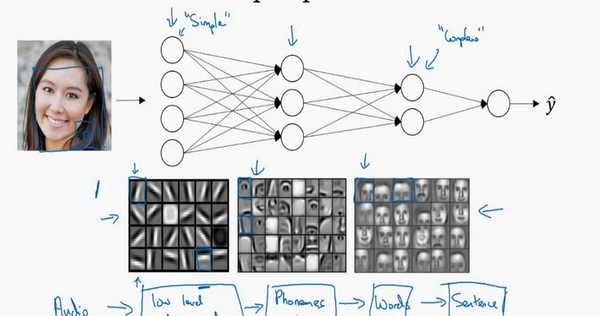
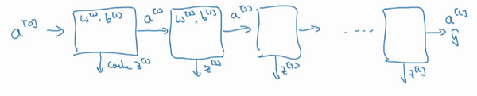

吴恩达深度学习笔记汇编1-2：神经网络和深度学习(Neural Networks and Deep Learning) 这部分知识是我在学习吴恩达的深度学习课程时对其笔记的汇总与编注。
内容上，原笔记是视频课程的字幕整合，我对原笔记一些无关紧要的内容进行了删减，以达到精炼的目的，并增加了一些个人见解、语义上的补充以及一部分中英对照和公式推导，以对吴老师的课程内容理解提供更充分的辅助，有一些使用了引用来加以区分，不过大部分并未进行标注（主要是没有观感很好的标注方法）。
我对原文有一些改动，主要是原文有一些地方翻译的不尽人意（这是因为视频课程中吴老师语句也并不会像课本一样做到非常条理清晰），所以我对那些词不达意、逻辑或语句结构混乱的地方进行了删改，以更清晰地表达出吴老师的原意。（这部分改动基本没有标注）
以及一些加粗，也是我自己认为相对重点的地方，带有一定主观性，见谅。
又，每节课程开始都会有简短的引言，不过看上去可能有些废话，但我认为也是必不可少的，所以用引用进行标注，可以选择性阅读
课程地址：【[双语字幕]吴恩达深度学习deeplearning.ai 】 https://www.bilibili.com/video/BV1FT4y1E74V
笔记链接：https://github.com/fengdu78/deeplearning_ai_books
笔记在线阅读：http://www.ai-start.com/dl2017/
神经网络概述（Neural Network Overview） 本周你将学习如何实现一个神经网络。在我们深入学习具体技术之前，我希望快速的带你预览一下本周你将会学到的东西。如果这个视频中的某些细节你没有看懂你也不用担心，我们将在后面的几个视频中深入讨论技术细节。
现在我们开始快速浏览一下如何实现神经网络。上周我们讨论了逻辑回归，我们了解了下面这个模型如何与下面公式3.1建立联系。
图3.1.1 :
x w b } ⟹ z = w T x + b (3.1) \left. \begin{array}{l} x\\ w\\ b \end{array} \right\} \implies{z={w}^Tx+b} \tag{3.1} x w b ⎭ ⎬ ⎫ ⟹ z = w T x + b ( 3.1 )
如上所示，首先你需要输入特征 x x x w w w b b b z z z
x w b } ⟹ z = w T x + b ⟹ a = σ ( z ) ⟹ L ( a , y ) (3.2) \left. \begin{array}{l} x\\ w\\ b \end{array} \right\} \implies{z=w^Tx+b} \implies{a = \sigma(z)}\\ \implies{L(a,y)} \tag{3.2} x w b ⎭ ⎬ ⎫ ⟹ z = w T x + b ⟹ a = σ ( z ) ⟹ L ( a , y ) ( 3.2 )
接下来使用 z z z a a a y ^ ⟹ a = σ ( z ) \hat{y}\implies{a = \sigma(z)} y ^ ⟹ a = σ ( z ) loss function L ( a , y ) L(a,y) L ( a , y )
神经网络看起来是如下这个样子。正如我之前已经提到过，你可以把许多sigmoid 单元堆叠起来形成一个神经网络。对于图中的节点，它包含了之前讲的计算的两个步骤：首先通过公式3.1计算出值 z z z σ ( z ) \sigma(z) σ ( z ) a a a
在这个神经网络（上图）对应的3个节点，首先计算第一层网络中的各个节点相关的数 z [ 1 ] z^{[1]} z [ 1 ] a [ 1 ] a^{[1]} a [ 1 ]
我们会使用符号上标 [ m ] ^{[m]} [ m ] m m m m m m [ m ] ^{[m]} [ m ] ( i ) ^{(i)} ( i ) i i i ；
整个计算过程，公式如下:
x W [ 1 ] b [ 1 ] } ⟹ z [ 1 ] = W [ 1 ] x + b [ 1 ] ⟹ a [ 1 ] = σ ( z [ 1 ] ) (3.3) \left. \begin{array}{r} {x }\\ {W^{[1]}}\\ {b^{[1]}} \end{array} \right\} \implies{z^{[1]}=W^{[1]}x+b^{[1]}} \implies{a^{[1]} = \sigma(z^{[1]})} \tag{3.3} x W [ 1 ] b [ 1 ] ⎭ ⎬ ⎫ ⟹ z [ 1 ] = W [ 1 ] x + b [ 1 ] ⟹ a [ 1 ] = σ ( z [ 1 ] ) ( 3.3 )
a [ 1 ] = σ ( z [ 1 ] ) W [ 2 ] b [ 2 ] } ⟹ z [ 2 ] = W [ 2 ] a [ 1 ] + b [ 2 ] ⟹ a [ 2 ] = σ ( z [ 2 ] ) ⟹ L ( a [ 2 ] , y ) (3.4) \left. \begin{array}{r} \text{$a^{[1]} = \sigma(z^{[1]})$}\\ \text{$W^{[2]}$}\\ \text{$b^{[2]}$}\\ \end{array} \right\} \implies{z^{[2]}=W^{[2]}a^{[1]}+b^{[2]}} \implies{a^{[2]} = \sigma(z^{[2]})}\\ \implies L\left(a^{[2]},y \right) \tag{3.4} a [ 1 ] = σ ( z [ 1 ] ) W [ 2 ] b [ 2 ] ⎭ ⎬ ⎫ ⟹ z [ 2 ] = W [ 2 ] a [ 1 ] + b [ 2 ] ⟹ a [ 2 ] = σ ( z [ 2 ] ) ⟹ L ( a [ 2 ] , y ) ( 3.4 )
类似逻辑回归，在计算后需要使用计算，接下来你需要使用另外一个线性方程对应的参数计算 z [ 2 ] z^{[2]} z [ 2 ] a [ 2 ] a^{[2]} a [ 2 ] a [ 2 ] a^{[2]} a [ 2 ] y ^ \hat{y} y ^
我知道这其中有很多细节，其中有一点非常难以理解，即在逻辑回归中，通过直接计算 z z z a a a z z z a a a a a a z z z loss function 。
这里是两层隐藏层，所以经过两次计算，最后通过 σ ( z [ 2 ] ) \sigma(z^{[2]}) σ ( z [ 2 ] )
注意区分逻辑回归与神经网络即可
d a [ 1 ] = d σ ( z [ 1 ] ) d W [ 2 ] d b [ 2 ] } ⟸ d z [ 2 ] = d ( W [ 2 ] α [ 1 ] + b [ 2 ] ) ⟸ d a [ 2 ] = d σ ( z [ 2 ] ) ⟸ d L ( a [ 2 ] , y ) (3.5) \left. \begin{array}{r} {da^{[1]} = {d}\sigma(z^{[1]})}\\ {dW^{[2]}}\\ {db^{[2]}}\\ \end{array} \right\} \impliedby dz^{[2]}={d}(W^{[2]}\alpha^{[1]}+b^{[2]}) \impliedby da^{[2]} = {d}\sigma(z^{[2]})\\ \impliedby dL\left(a^{[2]},y \right) \tag{3.5} d a [ 1 ] = d σ ( z [ 1 ] ) d W [ 2 ] d b [ 2 ] ⎭ ⎬ ⎫ ⟸ d z [ 2 ] = d ( W [ 2 ] α [ 1 ] + b [ 2 ] ) ⟸ d a [ 2 ] = d σ ( z [ 2 ] ) ⟸ d L ( a [ 2 ] , y ) ( 3.5 )
你应该记得逻辑回归中，有一些从后向前的计算用来计算导数 d a da d a d z dz d z d a [ 2 ] da^{[2]} d a [ 2 ] d z [ 2 ] dz^{[2]} d z [ 2 ] d W [ 2 ] dW^{[2]} d W [ 2 ] d b [ 2 ] db^{[2]} d b [ 2 ]
现在你大概了解了一下什么是神经网络，基于逻辑回归重复使用了两次该模型得到上述例子的神经网络。我清楚这里面多了很多新符号和细节，如果没有理解也不用担心，在接下来的视频中我们会仔细讨论具体细节。
总结一下：
这部分主要通过与逻辑回归的对比，对神经网络进行了引入，如图：
上面是逻辑回归模型，而下面是有一层隐藏层的一个简单双层神经网络，在逻辑回归中，我们通过前向计算得到各个参数，最终计算损失函数。而神经网络由多个sigmoid 单元堆叠而成，每个单元（即图中的圆圈）完成一次对应于逻辑回归中的 z , a z,a z , a
不太规范的，我们甚至可以把逻辑回归当做没有隐藏层的神经网络或者单层感知机。
但相似的，他们都有前向计算与反向传播，并且在原理上也是一致的
神经网络的表示（Neural Network Representation） 先回顾一下我在上一个视频画几张神经网络的图片，在这次课中我们将讨论这些图片的具体含义，也就是我们画的这些神经网络到底代表什么。
我们首先关注一个例子，本例中的神经网络只包含一个隐藏层（图3.2.1）。这是一张神经网络的图片，让我们给此图的不同部分取一些名字。图3.2.1：
我们有输入特征 x 1 x_1 x 1 x 2 x_2 x 2 x 3 x_3 x 3 输入层 。它包含了神经网络的输入；然后这里有另外一层我们称之为隐藏层 （图3.2.1的四个结点）。待会儿我会回过头来讲解术语"隐藏"的意义；在本例中最后一层只由一个结点构成，而这个只有一个结点的层被称为输出层 ，它负责产生预测值。
解释隐藏层的含义：在一个神经网络中，当你使用监督学习训练它的时候，训练集包含了输入 x x x y y y 。所以这也解释了词语隐藏层，只是表示你无法在训练集中看到他们。
现在我们再引入几个符号，就像我们之前用向量 x x x a [ 0 ] a^{[0]} a [ 0 ] a a a 网络中不同层的值会传递到它们后面的层中 ，输入层将 x x x a [ 0 ] a^{[0]} a [ 0 ] a [ 1 ] a^{[1]} a [ 1 ] a 1 [ 1 ] a^{[1]}_{1} a 1 [ 1 ] a 2 [ 1 ] a^{[1]}_{2} a 2 [ 1 ] Python 代码，那么它是一个规模为4x1的矩阵或一个大小为4的列向量，如下公式，它是四维的，因为在本例中，我们有四个结点或者单元，或者称为四个隐藏层单元；
a [ 1 ] = [ a 1 [ 1 ] a 2 [ 1 ] a 3 [ 1 ] a 4 [ 1 ] ] (3.7) a^{[1]} = \left[ \begin{array}{ccc} a^{[1]}_{1}\\ a^{[1]}_{2}\\ a^{[1]}_{3}\\ a^{[1]}_{4} \end{array} \right] \tag{3.7} a [ 1 ] = ⎣ ⎡ a 1 [ 1 ] a 2 [ 1 ] a 3 [ 1 ] a 4 [ 1 ] ⎦ ⎤ ( 3.7 )
最后输出层将产生某个数值 a a a y ^ \hat{y} y ^ a [ 2 ] a^{[2]} a [ 2 ] y ^ \hat{y} y ^ a a a
最后，我们要看到的隐藏层以及最后的输出层是带有参数的，这里的隐藏层将拥有两个参数 W W W b b b [ 1 ] ^{[1]} [ 1 ] W [ 1 ] W^{[1]} W [ 1 ] b [ 1 ] b^{[1]} b [ 1 ] W W W b b b W [ 2 ] W^{[2]} W [ 2 ] b [ 2 ] b^{[2]} b [ 2 ]
在下一个视频中。我们将更深入地了解这个神经网络是如何进行计算的，也就是这个神经网络是怎么输入 x x x y ^ \hat{y} y ^
计算一个神经网络的输出（Computing a Neural Network’s output） 在上一节的视频中，我们介绍只有一个隐藏层的神经网络的结构与符号表示。在这节的视频中让我们了解神经网络的输出究竟是如何计算出来的。
首先，回顾下只有一个隐藏层的简单两层神经网络结构 ：
其中，x x x a a a W W W
神经网络的计算
关于神经网络是怎么计算的，从我们之前提及的逻辑回归开始，如下图所示。用圆圈表示神经网络的计算单元，逻辑回归的计算有两个步骤，首先你按步骤计算出z z z sigmoid 函数为激活函数计算 z z z a a a
回到两层的神经网络，我们从隐藏层的第一个神经元开始，如上图第一个最上面的箭头所指。从上图可以看出，输入与逻辑回归相似，这个神经元的计算与逻辑回归一样分为两步，小圆圈代表了计算的两个步骤。
第一步，计算 z 1 [ 1 ] , z 1 [ 1 ] = w 1 [ 1 ] T x + b 1 [ 1 ] z^{[1]}_1,z^{[1]}_1 = w^{[1]T}_1x + b^{[1]}_1 z 1 [ 1 ] , z 1 [ 1 ] = w 1 [ 1 ] T x + b 1 [ 1 ]
第二步，通过激活函数计算 a 1 [ 1 ] , a 1 [ 1 ] = σ ( z 1 [ 1 ] ) a^{[1]}_1,a^{[1]}_1 = \sigma(z^{[1]}_1) a 1 [ 1 ] , a 1 [ 1 ] = σ ( z 1 [ 1 ] )
隐藏层的第二个以及后面两个神经元的计算过程一样，只是注意符号表示不同，最终分别得到a 2 [ 1 ] 、 a 3 [ 1 ] 、 a 4 [ 1 ] a^{[1]}_2、a^{[1]}_3、a^{[1]}_4 a 2 [ 1 ] 、 a 3 [ 1 ] 、 a 4 [ 1 ]
z 1 [ 1 ] = w 1 [ 1 ] T x + b 1 [ 1 ] , a 1 [ 1 ] = σ ( z 1 [ 1 ] ) z^{[1]}_1 = w^{[1]T}_1x + b^{[1]}_1, a^{[1]}_1 = \sigma(z^{[1]}_1) z 1 [ 1 ] = w 1 [ 1 ] T x + b 1 [ 1 ] , a 1 [ 1 ] = σ ( z 1 [ 1 ] )
z 2 [ 1 ] = w 2 [ 1 ] T x + b 2 [ 1 ] , a 2 [ 1 ] = σ ( z 2 [ 1 ] ) z^{[1]}_2 = w^{[1]T}_2x + b^{[1]}_2, a^{[1]}_2 = \sigma(z^{[1]}_2) z 2 [ 1 ] = w 2 [ 1 ] T x + b 2 [ 1 ] , a 2 [ 1 ] = σ ( z 2 [ 1 ] )
z 3 [ 1 ] = w 3 [ 1 ] T x + b 3 [ 1 ] , a 3 [ 1 ] = σ ( z 3 [ 1 ] ) z^{[1]}_3 = w^{[1]T}_3x + b^{[1]}_3, a^{[1]}_3 = \sigma(z^{[1]}_3) z 3 [ 1 ] = w 3 [ 1 ] T x + b 3 [ 1 ] , a 3 [ 1 ] = σ ( z 3 [ 1 ] )
z 4 [ 1 ] = w 4 [ 1 ] T x + b 4 [ 1 ] , a 4 [ 1 ] = σ ( z 4 [ 1 ] ) z^{[1]}_4 = w^{[1]T}_4x + b^{[1]}_4, a^{[1]}_4 = \sigma(z^{[1]}_4) z 4 [ 1 ] = w 4 [ 1 ] T x + b 4 [ 1 ] , a 4 [ 1 ] = σ ( z 4 [ 1 ] )
向量化计算
如果你执行神经网络的程序，用for循环来做这些看起来真的很低效。所以接下来我们要做的就是把这四个等式向量化。向量化的过程是将神经网络中的一层神经元参数纵向堆积起来，例如隐藏层中的 w w w ( 4 , 3 ) (4,3) ( 4 , 3 ) W [ 1 ] W^{[1]} W [ 1 ] w w w
z [ n ] = w [ n ] x + b [ n ] (3.8) z^{[n]} = w^{[n]}x + b^{[n]}\tag{3.8} z [ n ] = w [ n ] x + b [ n ] ( 3.8 )
a [ n ] = σ ( z [ n ] ) (3.9) a^{[n]}=\sigma(z^{[n]})\tag{3.9} a [ n ] = σ ( z [ n ] ) ( 3.9 )
详细过程见下:
a [ 1 ] = [ a 1 [ 1 ] a 2 [ 1 ] a 3 [ 1 ] a 4 [ 1 ] ] = σ ( z [ 1 ] ) (3.10) a^{[1]} = \left[ \begin{array}{c} a^{[1]}_{1}\\ a^{[1]}_{2}\\ a^{[1]}_{3}\\ a^{[1]}_{4} \end{array} \right] = \sigma(z^{[1]}) \tag{3.10} a [ 1 ] = ⎣ ⎡ a 1 [ 1 ] a 2 [ 1 ] a 3 [ 1 ] a 4 [ 1 ] ⎦ ⎤ = σ ( z [ 1 ] ) ( 3.10 )
[ z 1 [ 1 ] z 2 [ 1 ] z 3 [ 1 ] z 4 [ 1 ] ] = [ . . . W 1 [ 1 ] T . . . . . . W 2 [ 1 ] T . . . . . . W 3 [ 1 ] T . . . . . . W 4 [ 1 ] T . . . ] ⏞ W [ 1 ] ∗ [ x 1 x 2 x 3 ] ⏞ i n p u t + [ b 1 [ 1 ] b 2 [ 1 ] b 3 [ 1 ] b 4 [ 1 ] ] ⏞ b [ 1 ] (3.11) \left[ \begin{array}{c} z^{[1]}_{1}\\ z^{[1]}_{2}\\ z^{[1]}_{3}\\ z^{[1]}_{4}\\ \end{array} \right] = \overbrace{ \left[ \begin{array}{c} ...W^{[1]T}_{1}...\\ ...W^{[1]T}_{2}...\\ ...W^{[1]T}_{3}...\\ ...W^{[1]T}_{4}... \end{array} \right] }^{W^{[1]}} * \overbrace{ \left[ \begin{array}{c} x_1\\ x_2\\ x_3\\ \end{array} \right] }^{input} + \overbrace{ \left[ \begin{array}{c} b^{[1]}_1\\ b^{[1]}_2\\ b^{[1]}_3\\ b^{[1]}_4\\ \end{array} \right] }^{b^{[1]}} \tag{3.11} ⎣ ⎡ z 1 [ 1 ] z 2 [ 1 ] z 3 [ 1 ] z 4 [ 1 ] ⎦ ⎤ = ⎣ ⎡ ... W 1 [ 1 ] T ... ... W 2 [ 1 ] T ... ... W 3 [ 1 ] T ... ... W 4 [ 1 ] T ... ⎦ ⎤ W [ 1 ] ∗ ⎣ ⎡ x 1 x 2 x 3 ⎦ ⎤ in p u t + ⎣ ⎡ b 1 [ 1 ] b 2 [ 1 ] b 3 [ 1 ] b 4 [ 1 ] ⎦ ⎤ b [ 1 ] ( 3.11 )
对于神经网络的第一层，给予一个输入 x x x a [ 1 ] a^{[1]} a [ 1 ] x x x a [ 0 ] a^{[0]} a [ 0 ] a [ 2 ] a^{[2]} a [ 2 ] y ^ = a [ 2 ] \hat{y} = a^{[2]} y ^ = a [ 2 ]
如上图左半部分所示为神经网络，把网络左边部分盖住先忽略，那么最后的输出单元就相当于一个逻辑回归的计算单元。当你有一个包含一层隐藏层的神经网络，你需要去实现以计算得到输出的是右边的四个等式，并且可以看成是一个向量化的计算过程，计算出隐藏层的四个逻辑回归单元和整个隐藏层的输出结果，如果编程实现需要的也只是这四行代码。
通过本视频，你能够根据给出的一个单独的输入特征向量，运用四行代码计算出一个简单神经网络的输出。接下来你将了解的是如何一次能够计算出不止一个样本的神经网络输出，而是能一次性计算整个训练集的输出。
多样本向量化（Vectorizing across multiple examples） 在上一个视频，了解到如何针对于单一的训练样本，在神经网络上计算出预测值。
在这个视频，将会了解到如何向量化多个训练样本，并计算出结果。该过程与你在逻辑回归中所做类似 。
逻辑回归是将各个训练样本组合成矩阵，对矩阵的各列进行计算。神经网络是通过对逻辑回归中的等式简单的变形，让神经网络计算出输出值。这种计算是所有的训练样本同时进行的，以下是实现它具体的步骤：
上一节视频中得到的四个等式，它们给出了如何计算出z [ 1 ] z^{[1]} z [ 1 ] a [ 1 ] a^{[1]} a [ 1 ] z [ 2 ] z^{[2]} z [ 2 ] a [ 2 ] a^{[2]} a [ 2 ]
对于一个给定的输入特征向量 X X X α [ 2 ] \alpha^{[2]} α [ 2 ] y ^ \hat{y} y ^ m m m
用第一个训练样本 x [ 1 ] x^{[1]} x [ 1 ] y ^ [ 1 ] \hat{y}^{[1]} y ^ [ 1 ]
然后，用 x [ 2 ] x^{[2]} x [ 2 ] y ^ [ 2 ] \hat{y}^{[2]} y ^ [ 2 ] x [ m ] x^{[m]} x [ m ] y ^ [ m ] \hat{y}^{[m]} y ^ [ m ]
用激活函数表示法，如上图左下所示，它写成 a [ 2 ] ( 1 ) a^{[2](1)} a [ 2 ] ( 1 ) a [ 2 ] ( 2 ) a^{[2](2)} a [ 2 ] ( 2 ) a [ 2 ] ( m ) a^{[2](m)} a [ 2 ] ( m )
【注】：a [ 2 ] ( i ) a^{[2](i)} a [ 2 ] ( i ) ( i ) (i) ( i ) i i i [ 2 ] [2] [ 2 ]
如果有一个非向量化形式的实现，而且要计算出它的预测值，对于所有训练样本，需要让 i i i m m m
z [ 1 ] ( i ) = W [ 1 ] ( i ) x ( i ) + b [ 1 ] ( i ) z^{[1](i)}=W^{[1](i)}x^{(i)}+b^{[1](i)} z [ 1 ] ( i ) = W [ 1 ] ( i ) x ( i ) + b [ 1 ] ( i )
a [ 1 ] ( i ) = σ ( z [ 1 ] ( i ) ) a^{[1](i)}=\sigma(z^{[1](i)}) a [ 1 ] ( i ) = σ ( z [ 1 ] ( i ) )
z [ 2 ] ( i ) = W [ 2 ] ( i ) a [ 1 ] ( i ) + b [ 2 ] ( i ) z^{[2](i)}=W^{[2](i)}a^{[1](i)}+b^{[2](i)} z [ 2 ] ( i ) = W [ 2 ] ( i ) a [ 1 ] ( i ) + b [ 2 ] ( i )
a [ 2 ] ( i ) = σ ( z [ 2 ] ( i ) ) a^{[2](i)}=\sigma(z^{[2](i)}) a [ 2 ] ( i ) = σ ( z [ 2 ] ( i ) )
对于上面的这个方程中的 ( i ) ^{(i)} ( i ) ( i ) (i) ( i ) x x x z z z a a a m m m
本课程需要使用很多线性代数的内容，重要的是能够正确地实现这一点，尤其是在深度学习的错误中。实际上本课程认真地选择了运算符号，这些符号只是针对于这个课程的，并且能使这些向量化容易一些。
所以，希望通过这个细节可以更快地正确实现这些算法。接下来讲讲如何向量化这些：
x = [ ⋮ ⋮ ⋮ ⋮ x ( 1 ) x ( 2 ) ⋯ x ( m ) ⋮ ⋮ ⋮ ⋮ ] (3.12) x = \left[ \begin{array}{c} \vdots & \vdots & \vdots & \vdots\\ x^{(1)} & x^{(2)} & \cdots & x^{(m)}\\ \vdots & \vdots & \vdots & \vdots\\ \end{array} \right] \tag{3.12} x = ⎣ ⎡ ⋮ x ( 1 ) ⋮ ⋮ x ( 2 ) ⋮ ⋮ ⋯ ⋮ ⋮ x ( m ) ⋮ ⎦ ⎤ ( 3.12 )
Z [ 1 ] = [ ⋮ ⋮ ⋮ ⋮ z [ 1 ] ( 1 ) z [ 1 ] ( 2 ) ⋯ z [ 1 ] ( m ) ⋮ ⋮ ⋮ ⋮ ] (3.13) Z^{[1]} = \left[ \begin{array}{c} \vdots & \vdots & \vdots & \vdots\\ z^{[1](1)} & z^{[1](2)} & \cdots & z^{[1](m)}\\ \vdots & \vdots & \vdots & \vdots\\ \end{array} \right] \tag{3.13} Z [ 1 ] = ⎣ ⎡ ⋮ z [ 1 ] ( 1 ) ⋮ ⋮ z [ 1 ] ( 2 ) ⋮ ⋮ ⋯ ⋮ ⋮ z [ 1 ] ( m ) ⋮ ⎦ ⎤ ( 3.13 )
A [ 1 ] = [ ⋮ ⋮ ⋮ ⋮ α [ 1 ] ( 1 ) α [ 1 ] ( 2 ) ⋯ α [ 1 ] ( m ) ⋮ ⋮ ⋮ ⋮ ] (3.14) A^{[1]} = \left[ \begin{array}{c} \vdots & \vdots & \vdots & \vdots\\ \alpha^{[1](1)} & \alpha^{[1](2)} & \cdots & \alpha^{[1](m)}\\ \vdots & \vdots & \vdots & \vdots\\ \end{array} \right] \tag{3.14} A [ 1 ] = ⎣ ⎡ ⋮ α [ 1 ] ( 1 ) ⋮ ⋮ α [ 1 ] ( 2 ) ⋮ ⋮ ⋯ ⋮ ⋮ α [ 1 ] ( m ) ⋮ ⎦ ⎤ ( 3.14 )
z [ 1 ] ( i ) = W [ 1 ] ( i ) x ( i ) + b [ 1 ] α [ 1 ] ( i ) = σ ( z [ 1 ] ( i ) ) z [ 2 ] ( i ) = W [ 2 ] ( i ) α [ 1 ] ( i ) + b [ 2 ] α [ 2 ] ( i ) = σ ( z [ 2 ] ( i ) ) } ⟹ { A [ 1 ] = σ ( z [ 1 ] ) z [ 2 ] = W [ 2 ] A [ 1 ] + b [ 2 ] A [ 2 ] = σ ( z [ 2 ] ) (3.15) \left. \begin{array}{r} \text{$z^{[1](i)} = W^{[1](i)}x^{(i)} + b^{[1]}$}\\ \text{$\alpha^{[1](i)} = \sigma(z^{[1](i)})$}\\ \text{$z^{[2](i)} = W^{[2](i)}\alpha^{[1](i)} + b^{[2]}$}\\ \text{$\alpha^{[2](i)} = \sigma(z^{[2](i)})$}\\ \end{array} \right\} \implies \begin{cases} \text{$A^{[1]} = \sigma(z^{[1]})$}\\ \text{$z^{[2]} = W^{[2]}A^{[1]} + b^{[2]}$}\\ \text{$A^{[2]} = \sigma(z^{[2]})$}\\ \end{cases} \tag{3.15} z [ 1 ] ( i ) = W [ 1 ] ( i ) x ( i ) + b [ 1 ] α [ 1 ] ( i ) = σ ( z [ 1 ] ( i ) ) z [ 2 ] ( i ) = W [ 2 ] ( i ) α [ 1 ] ( i ) + b [ 2 ] α [ 2 ] ( i ) = σ ( z [ 2 ] ( i ) ) ⎭ ⎬ ⎫ ⟹ ⎩ ⎨ ⎧ A [ 1 ] = σ ( z [ 1 ] ) z [ 2 ] = W [ 2 ] A [ 1 ] + b [ 2 ] A [ 2 ] = σ ( z [ 2 ] ) ( 3.15 )
定义矩阵 X X X n n n n n n m m m
以此类推，从小写的向量 x x x X X X x x x
同理，z [ 1 ] ( 1 ) z^{[1](1)} z [ 1 ] ( 1 ) z [ 1 ] ( 2 ) z^{[1](2)} z [ 1 ] ( 2 ) Z [ 1 ] Z^{[1]} Z [ 1 ] m m m Z [ 1 ] Z^{[1]} Z [ 1 ]
同理，a [ 1 ] ( 1 ) a^{[1](1)} a [ 1 ] ( 1 ) a [ 1 ] ( 2 ) a^{[1](2)} a [ 1 ] ( 2 ) a [ 1 ] ( m ) a^{[1](m)} a [ 1 ] ( m ) x x x X X X z z z Z Z Z A [ 1 ] A^{[1]} A [ 1 ]
同样的，对于 Z [ 2 ] Z^{[2]} Z [ 2 ] A [ 2 ] A^{[2]} A [ 2 ]
这种符号其中一个作用就是，可以通过训练样本来进行索引。这就是水平索引对应于不同的训练样本的原因，从左到右扫描列向量就能得到各个训练样本的对应过程参数（X , Z , A X,Z,A X , Z , A
在垂直方向，这个垂直索引对应于神经网络中的不同节点。例如，A [ 1 ] A^{[1]} A [ 1 ]
当垂直扫描，是索引到隐藏单元的数字。当水平扫描，将从第一个训练示例中从第一个隐藏的单元到第二个训练样本，第三个训练样本……直到节点对应于第一个隐藏单元的激活值，且这个隐藏单元是位于这 m m m
也就是说，从水平上看，矩阵 A A A A A A
对于矩阵 Z ， X Z，X Z ， X
神经网络上通过在多样本情况下的向量化来使用这些等式。
在下一个视频中，将证明为什么这是一种正确向量化的实现。这种证明将会与逻辑回归中的证明类似。
向量化实现的解释（Justification for vectorized implementation） 在上一个视频中，我们学习到如何将多个训练样本横向堆叠成一个矩阵 X X X forward propagation ）部分的向量化实现。
在这个视频中，我们将会继续了解到，为什么上一节中写下的公式就是将多个样本向量化的正确实现。
我们先手动对几个样本计算一下前向传播，看看有什么规律：
z [ 1 ] ( 1 ) = W [ 1 ] x ( 1 ) + b [ 1 ] z [ 1 ] ( 2 ) = W [ 1 ] x ( 2 ) + b [ 1 ] z [ 1 ] ( 3 ) = W [ 1 ] x ( 3 ) + b [ 1 ] (3.16) z^{[1](1)} = W^{[1]}x^{(1)} + b^{[1]}\\ z^{[1](2)} = W^{[1]}x^{(2)} + b^{[1]}\\ z^{[1](3)} = W^{[1]}x^{(3)} + b^{[1]} \tag{3.16} z [ 1 ] ( 1 ) = W [ 1 ] x ( 1 ) + b [ 1 ] z [ 1 ] ( 2 ) = W [ 1 ] x ( 2 ) + b [ 1 ] z [ 1 ] ( 3 ) = W [ 1 ] x ( 3 ) + b [ 1 ] ( 3.16 )
这里，为了描述的简便，我们先忽略掉 b [ 1 ] b^{[1]} b [ 1 ] Python 的广播机制，可以很容易的将 b [ 1 ] b^{[1]} b [ 1 ]
现在 W [ 1 ] W^{[1]} W [ 1 ] x ( 1 ) , x ( 2 ) , x ( 3 ) x^{(1)},x^{(2)},x^{(3)} x ( 1 ) , x ( 2 ) , x ( 3 )
W [ 1 ] x = [ ⋯ ⋯ ⋯ ] u × n [ ⋮ ⋮ ⋮ ⋮ x ( 1 ) x ( 2 ) x ( 3 ) ⋮ ⋮ ⋮ ⋮ ⋮ ] u × m = [ ⋮ ⋮ ⋮ ⋮ w ( 1 ) x ( 1 ) w ( 1 ) x ( 2 ) w ( 1 ) x ( 3 ) ⋮ ⋮ ⋮ ⋮ ⋮ ] u × m = [ ⋮ ⋮ ⋮ ⋮ z [ 1 ] ( 1 ) z [ 1 ] ( 2 ) z [ 1 ] ( 3 ) ⋮ ⋮ ⋮ ⋮ ⋮ ] u × m = Z [ 1 ] (3.17) W^{[1]} x = \left[ \begin{array}{ccc} \cdots \\ \cdots \\ \cdots \\ \end{array} \right]_{u\times n} \left[ \begin{array}{c} \vdots &\vdots & \vdots & \vdots \\ x^{(1)} & x^{(2)} & x^{(3)} & \vdots\\ \vdots &\vdots & \vdots & \vdots \\ \end{array} \right]_{u\times m} = \left[ \begin{array}{c} \vdots &\vdots & \vdots & \vdots \\ w^{(1)}x^{(1)} & w^{(1)}x^{(2)} & w^{(1)}x^{(3)} & \vdots\\ \vdots &\vdots & \vdots & \vdots \\ \end{array} \right]_{u\times m} =\\ \left[ \begin{array}{c} \vdots &\vdots & \vdots & \vdots \\ z^{[1](1)} & z^{[1](2)} & z^{[1](3)} & \vdots\\ \vdots &\vdots & \vdots & \vdots \\ \end{array} \right]_{u\times m} = Z^{[1]} \tag{3.17} W [ 1 ] x = ⎣ ⎡ ⋯ ⋯ ⋯ ⎦ ⎤ u × n ⎣ ⎡ ⋮ x ( 1 ) ⋮ ⋮ x ( 2 ) ⋮ ⋮ x ( 3 ) ⋮ ⋮ ⋮ ⋮ ⎦ ⎤ u × m = ⎣ ⎡ ⋮ w ( 1 ) x ( 1 ) ⋮ ⋮ w ( 1 ) x ( 2 ) ⋮ ⋮ w ( 1 ) x ( 3 ) ⋮ ⋮ ⋮ ⋮ ⎦ ⎤ u × m = ⎣ ⎡ ⋮ z [ 1 ] ( 1 ) ⋮ ⋮ z [ 1 ] ( 2 ) ⋮ ⋮ z [ 1 ] ( 3 ) ⋮ ⋮ ⋮ ⋮ ⎦ ⎤ u × m = Z [ 1 ] ( 3.17 )
这里 u u u
单隐藏层 u = n [ 1 ] u=n^{[1]} u = n [ 1 ] u = n [ i ] u=n^{[i]} u = n [ i ] [ 1 ] [1] [ 1 ] [ 2 ] [2] [ 2 ]
视频中，吴恩达老师很细心的用不同的颜色表示不同的样本向量，及其对应的输出。所以从图中可以看出，当加入更多样本时，只需向矩阵X X X
所以从这里我们也可以了解到，为什么之前我们对单个样本的计算要写成 z [ 1 ] ( i ) = W [ 1 ] x ( i ) + b [ 1 ] z^{[1](i)} = W^{[1]}x^{(i)} + b^{[1]} z [ 1 ] ( i ) = W [ 1 ] x ( i ) + b [ 1 ] X X X Z [ 1 ] Z^{[1]} Z [ 1 ] Z [ 1 ] Z^{[1]} Z [ 1 ] b [ 1 ] b^{[1]} b [ 1 ] b [ 1 ] b^{[1]} b [ 1 ] Z [ 1 ] Z^{[1]} Z [ 1 ] Python 的广播机制对于这种矩阵与向量直接相加的处理方式是，将向量与矩阵的每一列相加。
所以这一节只是说明了为什么公式 Z [ 1 ] = W [ 1 ] X + b [ 1 ] Z^{[1]} =W^{[1]}X + \ b^{[1]} Z [ 1 ] = W [ 1 ] X + b [ 1 ]
最后，对这一段视频的内容做一个总结:
由公式3.12、公式3.13、公式3.14、公式3.15可以看出，使用向量化的方法，可以不需要显示循环，而直接通过矩阵运算从X X X A [ 1 ] A^{[1]} A [ 1 ] X X X A [ 0 ] A^{[0]} A [ 0 ] A [ i − 1 ] A^{[i-1]} A [ i − 1 ] A [ i ] A^{[i]} A [ i ] Z [ 1 ] = W [ 1 ] A [ 0 ] + b [ 1 ] Z^{[1]} = W^{[1]}A^{[0]} + b^{[1]} Z [ 1 ] = W [ 1 ] A [ 0 ] + b [ 1 ]
以上就是对神经网络向量化实现的正确性的解释，到目前为止，我们仅使用sigmoid 函数作为激活函数，事实上这并非最好的选择，在下一个视频中，将会继续深入的讲解如何使用更多不同种类的激活函数。
激活函数（Activation functions） 使用一个神经网络时，需要决定使用哪种激活函数用隐藏层上，哪种用在输出节点上。到目前为止，之前的视频只用过sigmoid 激活函数，但是，有时其他的激活函数效果会更好。
在神经网路的前向传播中，的a [ 1 ] = σ ( z [ 1 ] ) a^{[1]} = \sigma(z^{[1]}) a [ 1 ] = σ ( z [ 1 ] ) a [ 2 ] = σ ( z [ 2 ] ) a^{[2]} =\sigma(z^{[2]}) a [ 2 ] = σ ( z [ 2 ] ) sigmoid 函数。sigmoid 函数在这里被称为激活函数。
a = σ ( z ) = 1 1 + e − z (3.18) a = \sigma(z) = \frac{1}{1 + e^{- z}} \tag{3.18} a = σ ( z ) = 1 + e − z 1 ( 3.18 )
更通常的情况下，使用不同的函数 g ( z [ 1 ] ) g(z^{[1]}) g ( z [ 1 ] ) g g g sigmoid 函数以外的非线性函数。tanh 函数或者双曲正切函数是总体上都优于sigmoid 函数的激活函数。
如图，a = t a n h ( z ) a = tanh(z) a = t anh ( z )
a = t a n h ( z ) = e z − e − z e z + e − z (3.19) a= tanh(z) = \frac{e^z - e^{- z}}{e^z + e^{- z}} \tag{3.19} a = t anh ( z ) = e z + e − z e z − e − z ( 3.19 )
事实上，tanh 函数是sigmoid 的向下平移和伸缩后的结果。对它进行了变形后，穿过了( 0 , 0 ) (0,0) ( 0 , 0 )
结果表明，如果在隐藏层上使用函数 g ( z [ 1 ] ) = t a n h ( z [ 1 ] ) g(z^{[1]}) = tanh(z^{[1]}) g ( z [ 1 ] ) = t anh ( z [ 1 ] ) 。因为函数值域在-1和+1的激活函数，其均值是更接近零均值的。在训练一个算法模型时，如果使用tanh 函数代替sigmoid 函数中心化数据，使得数据的平均值更接近0而不是0.5.
在讨论优化算法时，有一点要说明：我基本已经不用sigmoid 激活函数了，tanh 函数在所有场合都优于sigmoid 函数。
但有一个例外：在二分类的问题 中，对于输出层，因为 y y y y ^ \hat{y} y ^ sigmoid 激活函数。这里的 g ( z [ 2 ] ) = σ ( z [ 2 ] ) g(z^{[2]}) = \sigma(z^{[2]}) g ( z [ 2 ] ) = σ ( z [ 2 ] )
在这个例子里看到的是，对隐藏层使用tanh激活函数，输出层使用sigmoid函数 。
所以，在不同的神经网络层中，激活函数可以不同。为了表示不同的激活函数，在不同的层中，使用方括号上标来指出 g g g [ 1 ] [1] [ 1 ] g g g [ 2 ] [2] [ 2 ] 方括号上标 [ 1 ] [1] [ 1 ] [ 2 ] [2] [ 2 ] 。
sigmoid 函数和tanh 函数两者共同的缺点是，在 z z z 。
在机器学习另一个很流行的函数是：修正线性单元的函数（ReLu ），a = m a x ( 0 , z ) a=max(0,z) a = ma x ( 0 , z )
所以，只要 z z z z z z z z z z = 0 z=0 z = 0 z z z z z z
这有一些选择激活函数的经验法则：
如果输出是0、1值（二分类问题），则输出层选择sigmoid 函数，然后其它的所有单元都选择Relu 函数。这是很多激活函数的默认选择，如果在隐藏层上不确定使用哪个激活函数，那么通常会使用Relu 激活函数。有时，也会使用tanh 激活函数，但Relu 的一个优点是：当z z z 。
这里也有另一个版本的Relu 被称为Leaky Relu 。当 z z z Relu 激活函数效果要好，尽管在实际中Leaky ReLu 使用的并不多。

两者的优点是：
第一，在 z z z if-else 语句，而sigmoid 函数需要进行浮点四则运算，在实践中，使用ReLu 激活函数神经网络通常会比使用sigmoid 或者tanh 激活函数学习的更快。
第二，sigmoid 和tanh 函数的导数在正负饱和区的梯度都会接近于0，这会造成梯度弥散，而Relu 和Leaky ReLu 函数大于0部分都为常数，不会产生梯度弥散现象。(同时应该注意到的是，Relu 进入负半区的时候，梯度为0，神经元此时不会训练，产生所谓的稀疏性，而Leaky ReLu 不会有这问题)
z z z ReLu 的梯度一半都是0，但是在实践中，有足够多的隐藏层使得 z z z
快速概括一下不同激活函数的过程和结论。
sigmoid 激活函数：除了输出层是一个二分类问题基本不会用它。
tanh 激活函数：tanh 是非常优秀的，几乎适合所有场合。
ReLu 激活函数：最常用的默认函数，如果不确定用哪个激活函数，就使用ReLu 或者Leaky ReLu 。a = m a x ( 0.01 z , z ) a= max(0.01z,z) a = ma x ( 0.01 z , z )
为什么常数是0.01？当然，可以为学习算法选择不同的参数。
在选择自己神经网络的激活函数时，有一定的直观感受，在深度学习中的经常遇到一个问题：在编写神经网络的时候，会有很多选择：隐藏层单元的个数、激活函数的选择、初始化权值……这些选择想得到一个对比较好的指导原则是挺困难的。
鉴于以上三个原因，以及在工业界的见闻，提供一种直观的感受，哪一种工业界用的多，哪一种用的少。但是，自己的神经网络的应用，以及其特殊性，是很难提前知道选择哪些效果更好。所以通常的建议是：如果不确定哪一个激活函数效果更好，可以把它们都试试，然后在验证集或者发展集上进行评价。然后看哪一种表现的更好，就去使用它。
为自己的神经网络的应用测试这些不同的选择，会在以后检验自己的神经网络或者评估算法的时候，看到不同的效果。如果仅仅遵守使用默认的ReLu 激活函数，而不要用其他的激励函数，那就可能在近期或者往后，每次解决问题的时候都使用相同的办法。
为什么需要非线性激活函数？（why need a nonlinear activation function?） 为什么神经网络需要非线性激活函数？事实证明：要让你的神经网络能够拟合出有趣的函数，你必须使用非线性激活函数，证明如下：
对于神经网络正向传播的方程，我们去掉函数 g g g a [ 1 ] = z [ 1 ] a^{[1]} = z^{[1]} a [ 1 ] = z [ 1 ] g ( z ) = z g(z)=z g ( z ) = z a [ 2 ] = z [ 2 ] a^{[2]} = z^{[2]} a [ 2 ] = z [ 2 ] y y y x x x
如果我们改变前面的式子，令：
a [ 1 ] = z [ 1 ] = W [ 1 ] x + b [ 1 ] (1) a^{[1]} = z^{[1]} = W^{[1]}x + b^{[1]} \tag1 a [ 1 ] = z [ 1 ] = W [ 1 ] x + b [ 1 ] ( 1 )
a [ 2 ] = z [ 2 ] = W [ 2 ] a [ 1 ] + b [ 2 ] (2) a^{[2]} = z^{[2]} = W^{[2]}a^{[1]}+ b^{[2]}\tag2 a [ 2 ] = z [ 2 ] = W [ 2 ] a [ 1 ] + b [ 2 ] ( 2 )
将式(1)代入式(2)中，则：
a [ 2 ] = z [ 2 ] = W [ 2 ] W [ 1 ] x + W [ 2 ] b [ 1 ] + b [ 2 ] (3) a^{[2]} = z^{[2]} = W^{[2]}W^{[1]}x + W^{[2]}b^{[1]} + b^{[2]}\tag3 a [ 2 ] = z [ 2 ] = W [ 2 ] W [ 1 ] x + W [ 2 ] b [ 1 ] + b [ 2 ] ( 3 )
简化多项式得
a [ 2 ] = z [ 2 ] = W ′ x + b ′ a^{[2]} = z^{[2]} = W^{'}x + b^{'} a [ 2 ] = z [ 2 ] = W ′ x + b ′
其中：
W ′ = W [ 2 ] W [ 1 ] b ′ = W [ 2 ] b [ 1 ] + b [ 2 ] W'=W^{[2]}W^{[1]}\\ b'=W^{[2]}b^{[1]} + b^{[2]} W ′ = W [ 2 ] W [ 1 ] b ′ = W [ 2 ] b [ 1 ] + b [ 2 ]
如果你是用线性激活函数或者叫恒等激励函数，那么神经网络只是把输入线性组合再输出。
我们稍后会谈到深度网络，有很多层的神经网络，很多隐藏层。事实证明，如果你使用线性激活函数或者没有使用一个激活函数，那么无论你的神经网络有多少层一直在做的只是计算线性函数，所以不如直接去掉全部隐藏层 。在我们的简明案例中，事实证明如果你在隐藏层用线性激活函数，在输出层用sigmoid 函数，那么这个模型的复杂度和没有任何隐藏层的标准Logistic 回归是一样的，如果你愿意的话，可以证明一下。
在这里线性隐层一点用也没有，因为这两个线性函数的组合本身就是线性函数，所以除非你引入非线性，否则你无法计算更有趣的函数，即使你的网络层数再多也不行；只有一个地方可以使用线性激活函数：g ( z ) = z g(z)=z g ( z ) = z y y y y y y y y y
总而言之，不能在隐藏层用线性激活函数，可以用ReLU或者tanh或者leaky ReLU或者其他的非线性激活函数，唯一可以用线性激活函数的通常就是输出层 ；除了一些特殊情况，会在隐层用线性函数的，比如与压缩有关的 ，那方面在这里将不深入讨论。在这之外，在隐层使用线性激活函数非常少见。因为房价都是非负数，所以我们也可以在输出层使用ReLU 函数这样你的 y ^ \hat{y} y ^
理解为什么使用非线性激活函数对于神经网络十分关键，接下来我们讨论梯度下降，并在下一个视频中开始讨论梯度下降的基础——激活函数的导数。
激活函数的导数（Derivatives of activation functions） 在神经网络中使用反向传播的时候，你真的需要计算激活函数的斜率或者导数。针对以下四种激活，求其导数如下：
1）sigmoid activation function
其具体的求导如下：
d d z g ( z ) = 1 1 + e − z ( 1 − 1 1 + e − z ) = g ( z ) ( 1 − g ( z ) ) \frac{d}{dz}g(z) = {\frac{1}{1 + e^{-z}} (1-\frac{1}{1 + e^{-z}})}=g(z)(1-g(z)) d z d g ( z ) = 1 + e − z 1 ( 1 − 1 + e − z 1 ) = g ( z ) ( 1 − g ( z ))
注：
当 z z z z = − 10 z= -10 z = − 10 d d z g ( z ) ≈ 0 \frac{d}{dz}g(z)\approx0 d z d g ( z ) ≈ 0
当 z = 0 z=0 z = 0 d d z g ( z ) =g(z)(1-g(z))= 1 / 4 \frac{d}{dz}g(z)\text{=g(z)(1-g(z))=}{1}/{4} d z d g ( z ) =g(z)(1-g(z))= 1 / 4
在神经网络中 a = g ( z ) a= g(z) a = g ( z ) g ( z ) ′ = d d z g ( z ) = a ( 1 − a ) {g(z)}^{'}=\frac{d}{dz}g(z)=a(1-a) g ( z ) ′ = d z d g ( z ) = a ( 1 − a )
2）Tanh activation function
其具体的求导如下：
g ( z ) = t a n h ( z ) = e z − e − z e z + e − z g(z) = tanh(z) = \frac{e^{z} - e^{-z}}{e^{z} + e^{-z}} g ( z ) = t anh ( z ) = e z + e − z e z − e − z
d d z g ( z ) = 1 − ( t a n h ( z ) ) 2 \frac{d}{dz}g(z) = 1 - (tanh(z))^{2} d z d g ( z ) = 1 − ( t anh ( z ) ) 2
注：
当 z = 10 z= 10 z = 10 z = − 10 z= -10 z = − 10 d d z g ( z ) ≈ 0 \frac{d}{dz}g(z)\approx0 d z d g ( z ) ≈ 0
当 z = 0 z= 0 z = 0 d d z g ( z ) =1-(0)= 1 \frac{d}{dz}g(z)\text{=1-(0)=}1 d z d g ( z ) =1-(0)= 1
3）Rectified Linear Unit (ReLU)
g ( z ) = m a x ( 0 , z ) g(z) =max (0,z) g ( z ) = ma x ( 0 , z )
g ( z ) ′ = { 0 if z < 0 1 if z > 0 u n d e f i n e d if z = 0 g(z)^{'}= \begin{cases} 0& \text{if z < 0}\\ 1& \text{if z > 0}\\ undefined& \text{if z = 0} \end{cases} g ( z ) ′ = ⎩ ⎨ ⎧ 0 1 u n d e f in e d if z < 0 if z > 0 if z = 0
注：通常在 z = 0 z=0 z = 0 z = 0 z=0 z = 0
4）Leaky linear unit (Leaky ReLU)
与ReLU 类似
g ( z ) = max ( 0.01 z , z ) g ( z ) ′ = { 0.01 if z < 0 1 if z > 0 u n d e f i n e d if z = 0 g(z)=\max(0.01z,z) \\ \\ \\ g(z)^{'}= \begin{cases} 0.01& \text{if z < 0}\\ 1& \text{if z > 0}\\ undefined& \text{if z = 0} \end{cases} g ( z ) = max ( 0.01 z , z ) g ( z ) ′ = ⎩ ⎨ ⎧ 0.01 1 u n d e f in e d if z < 0 if z > 0 if z = 0
注：通常在 z = 0 z = 0 z = 0 z = 0 z=0 z = 0
神经网络的梯度下降（Gradient descent for neural networks） 在这个视频中，我会给你实现反向传播或者说梯度下降算法的方程组，在下一个视频我们会介绍为什么这几个特定的方程是针对你的神经网络实现梯度下降的正确方程。
你的单隐层神经网络会有 W [ 1 ] W^{[1]} W [ 1 ] b [ 1 ] b^{[1]} b [ 1 ] W [ 2 ] W^{[2]} W [ 2 ] b [ 2 ] b^{[2]} b [ 2 ] n x n_x n x n [ 1 ] n^{[1]} n [ 1 ] n [ 2 ] n^{[2]} n [ 2 ] n [ 2 ] = 1 n^{[2]}=1 n [ 2 ] = 1
在我们的例子中，我们只介绍过的这种情况，那么参数:
矩阵 W [ 1 ] W^{[1]} W [ 1 ] n [ 1 ] , n [ 0 ] n^{[1]}, n^{[0]} n [ 1 ] , n [ 0 ] b [ 1 ] b^{[1]} b [ 1 ] n [ 1 ] n^{[1]} n [ 1 ] ( n [ 1 ] , 1 ) (n^{[1]}, 1) ( n [ 1 ] , 1 )
矩阵 W [ 2 ] W^{[2]} W [ 2 ] n [ 2 ] , n [ 1 ] n^{[2]}, n^{[1]} n [ 2 ] , n [ 1 ] b [ 2 ] b^{[2]} b [ 2 ] ( n [ 2 ] , 1 ) (n^{[2]},1) ( n [ 2 ] , 1 )
你还有一个神经网络的成本函数，假设你在做二分类任务，那么你的成本函数等于：
J ( W [ 1 ] , b [ 1 ] , W [ 2 ] , b [ 2 ] ) = 1 m ∑ i = 1 m L ( y ^ , y ) J(W^{[1]},b^{[1]},W^{[2]},b^{[2]}) = {\frac{1}{m}}\sum_{i=1}^mL(\hat{y}, y) J ( W [ 1 ] , b [ 1 ] , W [ 2 ] , b [ 2 ] ) = m 1 i = 1 ∑ m L ( y ^ , y )
loss function 和之前做logistic 回归完全一样，即：
L ( y ^ , y ) = − y log ( y ^ ) − ( 1 − y ) log ( 1 − y ^ ) L\left( \hat{y},y \right)=-y\log(\hat{y})-(1-y)\log (1-\hat{y}) L ( y ^ , y ) = − y log ( y ^ ) − ( 1 − y ) log ( 1 − y ^ )
训练参数需要做梯度下降，在训练神经网络的时候，随机初始化参数很重要，而不是初始化成全零。当你参数初始化成某些值后，每次梯度下降都会循环计算预测值 y ^ ( i ) , ( i = 1 , 2 , … , m ) \hat{y}^{(i)},(i=1,2,…,m) y ^ ( i ) , ( i = 1 , 2 , … , m )
d W [ 1 ] = d J d W [ 1 ] , d b [ 1 ] = d J d b [ 1 ] (3.28) dW^{[1]} = \frac{dJ}{dW^{[1]}},db^{[1]} = \frac{dJ}{db^{[1]}}\tag{3.28} d W [ 1 ] = d W [ 1 ] dJ , d b [ 1 ] = d b [ 1 ] dJ ( 3.28 )
d W [ 2 ] = d J d W [ 2 ] , d b [ 2 ] = d J d b [ 2 ] (3.29) {d}W^{[2]} = \frac{dJ}{dW^{[2]}},{d}b^{[2]} = \frac{dJ}{db^{[2]}}\tag{3.29} d W [ 2 ] = d W [ 2 ] dJ , d b [ 2 ] = d b [ 2 ] dJ ( 3.29 )
W [ 1 ] ⟹ W [ 1 ] − α ⋅ d W [ 1 ] , b [ 1 ] ⟹ b [ 1 ] − α ⋅ d b [ 1 ] (3.30) W^{[1]}\implies{W^{[1]} - \alpha \cdot dW^{[1]}},b^{[1]}\implies{b^{[1]} -\alpha \cdot db^{[1]}}\tag{3.30} W [ 1 ] ⟹ W [ 1 ] − α ⋅ d W [ 1 ] , b [ 1 ] ⟹ b [ 1 ] − α ⋅ d b [ 1 ] ( 3.30 )
W [ 2 ] ⟹ W [ 2 ] − α ⋅ d W [ 2 ] , b [ 2 ] ⟹ b [ 2 ] − α ⋅ d b [ 2 ] (3.31) W^{[2]}\implies{W^{[2]} - \alpha \cdot {\rm d}W^{[2]}},b^{[2]}\implies{b^{[2]} - \alpha \cdot {\rm d}b^{[2]}}\tag{3.31} W [ 2 ] ⟹ W [ 2 ] − α ⋅ d W [ 2 ] , b [ 2 ] ⟹ b [ 2 ] − α ⋅ d b [ 2 ] ( 3.31 )
正向传播方程如下（之前讲过）：
z [ 1 ] = W [ 1 ] x + b [ 1 ] z^{[1]} = W^{[1]}x + b^{[1]} z [ 1 ] = W [ 1 ] x + b [ 1 ]
a [ 1 ] = σ ( z [ 1 ] ) a^{[1]} = \sigma(z^{[1]}) a [ 1 ] = σ ( z [ 1 ] )
z [ 2 ] = W [ 2 ] a [ 1 ] + b [ 2 ] z^{[2]} = W^{[2]}a^{[1]} + b^{[2]} z [ 2 ] = W [ 2 ] a [ 1 ] + b [ 2 ]
a [ 2 ] = g [ 2 ] ( z [ z ] ) = σ ( z [ 2 ] ) a^{[2]} = g^{[2]}(z^{[z]}) = \sigma(z^{[2]}) a [ 2 ] = g [ 2 ] ( z [ z ] ) = σ ( z [ 2 ] )
反向传播方程如下:
back propagation ：
d z [ 2 ] = A [ 2 ] − Y , Y = [ y [ 1 ] y [ 2 ] ⋯ y [ m ] ] (3.32) dz^{[2]} = A^{[2]} - Y , Y = \begin{bmatrix}y^{[1]} & y^{[2]} & \cdots & y^{[m]}\\ \end{bmatrix}\tag{3.32} d z [ 2 ] = A [ 2 ] − Y , Y = [ y [ 1 ] y [ 2 ] ⋯ y [ m ] ] ( 3.32 )
d W [ 2 ] = 1 m d z [ 2 ] A [ 1 ] T (3.33) dW^{[2]} = {\frac{1}{m}}dz^{[2]}A^{[1]T}\tag{3.33} d W [ 2 ] = m 1 d z [ 2 ] A [ 1 ] T ( 3.33 )
d b [ 2 ] = 1 m n p . s u m ( d z [ 2 ] , a x i s = 1 , k e e p d i m s = T r u e ) (3.34) {\rm d}b^{[2]} = {\frac{1}{m}}np.sum({d}z^{[2]},axis=1,keepdims=True)\tag{3.34} d b [ 2 ] = m 1 n p . s u m ( d z [ 2 ] , a x i s = 1 , k ee p d im s = T r u e ) ( 3.34 )
d z [ 1 ] = W [ 2 ] T d z [ 2 ] ⏟ ( n [ 1 ] , m ) ∗ g [ 1 ] ′ ⏟ a c t i v a t i o n f u n c t i o n o f h i d d e n l a y e r ∗ ( z [ 1 ] ) ⏟ ( n [ 1 ] , m ) (3.35) dz^{[1]} = \underbrace{W^{[2]T}{ d}z^{[2]}}_{(n^{[1]},m)}\quad*\underbrace{g^{[1]'}}_{activation \; function \; of \; hidden \; layer}*\quad\underbrace{(z^{[1]})}_{(n^{[1]},m)}\tag{3.35} d z [ 1 ] = ( n [ 1 ] , m ) W [ 2 ] T d z [ 2 ] ∗ a c t i v a t i o n f u n c t i o n o f hi dd e n l a yer g [ 1 ] ′ ∗ ( n [ 1 ] , m ) ( z [ 1 ] ) ( 3.35 )
d W [ 1 ] = 1 m d z [ 1 ] x T (3.36) dW^{[1]} = {\frac{1}{m}}dz^{[1]}x^{T}\tag{3.36} d W [ 1 ] = m 1 d z [ 1 ] x T ( 3.36 )
d b [ 1 ] ⏟ ( n [ 1 ] , 1 ) = 1 m n p . s u m ( d z [ 1 ] , a x i s = 1 , k e e p d i m s = T r u e ) (3.37) {\underbrace{db^{[1]}}_{(n^{[1]},1)}} = {\frac{1}{m}}np.sum(dz^{[1]},axis=1,keepdims=True) \tag{3.37} ( n [ 1 ] , 1 ) d b [ 1 ] = m 1 n p . s u m ( d z [ 1 ] , a x i s = 1 , k ee p d im s = T r u e ) ( 3.37 )
注：这些都是针对所有样本进行过向量化，Y = [ y ( 1 ) y ( 2 ) ⋯ y ( m ) ] Y=[y^{(1)}\ y^{(2)}\ \cdots\ y^{(m)}] Y = [ y ( 1 ) y ( 2 ) ⋯ y ( m ) ] 1 × m 1×m 1 × m np.sum是python的numpy命令，axis=1表示水平相加求和，keepdims是防止python 输出那些古怪的秩数 ( n , ) (n,) ( n , ) d b [ 2 ] db^{[2]} d b [ 2 ] ( n , 1 ) (n,1) ( n , 1 )
目前为止，我们计算的都和Logistic 回归十分相似，但当你开始计算反向传播时，你需要计算的是隐藏层函数的导数，输出在使用sigmoid 函数进行二元分类。这里是进行逐个元素乘积，因为 W [ 2 ] T d z [ 2 ] W^{[2]T}dz^{[2]} W [ 2 ] T d z [ 2 ] ( z [ 1 ] ) (z^{[1]}) ( z [ 1 ] ) ( n [ 1 ] , m ) (n^{[1]},m) ( n [ 1 ] , m )
还有一种防止python 输出奇怪的秩数，需要显式地调用reshape把np.sum输出结果写成矩阵形式。
以上就是正向传播的4个方程和反向传播的6个方程，这里我是直接给出的，在下个视频中，我会讲如何导出反向传播的这6个式子的。如果你要实现这些算法，你必须正确执行正向和反向传播运算，你必须能计算所有需要的导数，用梯度下降来学习神经网络的参数；你也可以许多成功的深度学习从业者一样直接实现这个算法，不去了解其中的知识。
（选修）直观理解反向传播（Backpropagation intuition） 这个视频主要是推导反向传播。
下面是逻辑回归的推导：
回想一下逻辑回归的公式：
x w b } ⟹ z = w T x + b ⟹ a = σ ( z ) ⟹ L ( a , y ) (3.2) \left. \begin{array}{l} x\\ w\\ b \end{array} \right\} \implies z={w}^Tx+b \implies a = \sigma(z) \implies{L(a,y)} \tag{3.2} x w b ⎭ ⎬ ⎫ ⟹ z = w T x + b ⟹ a = σ ( z ) ⟹ L ( a , y ) ( 3.2 )
d a [ 1 ] = d σ ( z [ 1 ] ) d W [ 2 ] d b [ 2 ] } ⟸ d z [ 2 ] = d ( W [ 2 ] α [ 1 ] + b [ 2 ] ) ⟸ d a [ 2 ] = d σ ( z [ 2 ] ) ⟸ d L ( a [ 2 ] , y ) (3.5) \left. \begin{array}{r} {da^{[1]} = {d}\sigma(z^{[1]})}\\ {dW^{[2]}}\\ {db^{[2]}}\\ \end{array} \right\} \impliedby dz^{[2]}={d}(W^{[2]}\alpha^{[1]}+b^{[2]}) \impliedby da^{[2]} = {d}\sigma(z^{[2]})\\ \impliedby dL\left(a^{[2]},y \right) \tag{3.5} d a [ 1 ] = d σ ( z [ 1 ] ) d W [ 2 ] d b [ 2 ] ⎭ ⎬ ⎫ ⟸ d z [ 2 ] = d ( W [ 2 ] α [ 1 ] + b [ 2 ] ) ⟸ d a [ 2 ] = d σ ( z [ 2 ] ) ⟸ d L ( a [ 2 ] , y ) ( 3.5 )
z [ 1 ] ( i ) = W [ 1 ] ( i ) x ( i ) + b [ 1 ] α [ 1 ] ( i ) = σ ( z [ 1 ] ( i ) ) z [ 2 ] ( i ) = W [ 2 ] ( i ) α [ 1 ] ( i ) + b [ 2 ] α [ 2 ] ( i ) = σ ( z [ 2 ] ( i ) ) } ⟹ { A [ 1 ] = σ ( z [ 1 ] ) z [ 2 ] = W [ 2 ] A [ 1 ] + b [ 2 ] A [ 2 ] = σ ( z [ 2 ] ) (3.15) \left. \begin{array}{r} \text{$z^{[1](i)} = W^{[1](i)}x^{(i)} + b^{[1]}$}\\ \text{$\alpha^{[1](i)} = \sigma(z^{[1](i)})$}\\ \text{$z^{[2](i)} = W^{[2](i)}\alpha^{[1](i)} + b^{[2]}$}\\ \text{$\alpha^{[2](i)} = \sigma(z^{[2](i)})$}\\ \end{array} \right\} \implies \begin{cases} \text{$A^{[1]} = \sigma(z^{[1]})$}\\ \text{$z^{[2]} = W^{[2]}A^{[1]} + b^{[2]}$}\\ \text{$A^{[2]} = \sigma(z^{[2]})$}\\ \end{cases} \tag{3.15} z [ 1 ] ( i ) = W [ 1 ] ( i ) x ( i ) + b [ 1 ] α [ 1 ] ( i ) = σ ( z [ 1 ] ( i ) ) z [ 2 ] ( i ) = W [ 2 ] ( i ) α [ 1 ] ( i ) + b [ 2 ] α [ 2 ] ( i ) = σ ( z [ 2 ] ( i ) ) ⎭ ⎬ ⎫ ⟹ ⎩ ⎨ ⎧ A [ 1 ] = σ ( z [ 1 ] ) z [ 2 ] = W [ 2 ] A [ 1 ] + b [ 2 ] A [ 2 ] = σ ( z [ 2 ] ) ( 3.15 )
所以回想当时我们讨论逻辑回归的时候，我们有这个正向传播步骤，其中我们计算 z z z a a a L L L
与 ( 3.5 ) (3.5) ( 3.5 )
x w b } ⏟ d w = d z ⋅ x , d b = d z ⟸ z = w T x + b ⏟ ∂ L ∂ z = d z = ∂ L ∂ a ⋅ d a d z = d a ⋅ g ′ ( z ) , a = g ( z ) = σ ( z ) ⟸ a = σ ( z ) ⟸ L ( a , y ) ⏟ d a = d d a L ( a , y ) = ( − y log α − ( 1 − y ) log ( 1 − a ) ) ′ = − y a + 1 − y 1 − a \underbrace{ \left. \begin{array}{l} {x }\\ {w }\\ {b } \end{array} \right\} }_{dw={dz}\cdot x, db =dz} \impliedby\underbrace{z={w}^Tx+b}_{\frac{\partial L}{\partial z}=dz=\frac{\partial L}{\partial a}\cdot \frac{da}{dz}=da\cdot g^{'}(z), a=g(z)=\sigma(z)} \impliedby\underbrace{a = \sigma(z) \impliedby L(a,y)}_{da= \frac{d}{da}{L}\left(a,y \right)=(-y\log{\alpha} - (1 - y)\log(1 - a))^{'}=-\frac{y}{a} + \frac{1 - y}{1 - a}} d w = d z ⋅ x , d b = d z x w b ⎭ ⎬ ⎫ ⟸ ∂ z ∂ L = d z = ∂ a ∂ L ⋅ d z d a = d a ⋅ g ′ ( z ) , a = g ( z ) = σ ( z ) z = w T x + b ⟸ d a = d a d L ( a , y ) = ( − y l o g α − ( 1 − y ) l o g ( 1 − a ) ) ′ = − a y + 1 − a 1 − y a = σ ( z ) ⟸ L ( a , y )
有些乱
神经网络的计算中，与逻辑回归十分类似，但中间会有多隐藏层的计算。我们仍然使用先前的单隐藏层的神经网络模型作为例子。并且我们只使用了一个样本集
前向传播：
计算 z [ 1 ] z^{[1]} z [ 1 ] a [ 1 ] a^{[1]} a [ 1 ] z [ 2 ] z^{[2]} z [ 2 ] a [ 2 ] a^{[2]} a [ 2 ] loss function 。
反向传播：
向后推算出 d a [ 2 ] da^{[2]} d a [ 2 ] d z [ 2 ] dz^{[2]} d z [ 2 ] d a [ 1 ] da^{[1]} d a [ 1 ] d z [ 1 ] dz^{[1]} d z [ 1 ] x x x x x x x x x d a [ 2 ] da^{[2]} d a [ 2 ] d z [ 2 ] dz^{[2]} d z [ 2 ]
d z [ 2 ] = a [ 2 ] − y ， d W [ 2 ] = d z [ 2 ] a [ 1 ] T (3.40) dz^{[2]}=a^{[2]}-y\;，\;dW^{[2]}=dz^{[2]}{a^{[1]}}^{T}\tag{3.40} d z [ 2 ] = a [ 2 ] − y ， d W [ 2 ] = d z [ 2 ] a [ 1 ] T ( 3.40 )
注意：为什么 a [ 1 ] T a^{[1]T} a [ 1 ] T d w = d z ⋅ x dw=dz\cdot x d w = d z ⋅ x d w dw d w w w w W [ 2 ] W^{[2]} W [ 2 ] w T w^T w T
又：
d z [ 2 ] = ∂ L ∂ z [ 2 ] = ∂ L ∂ a [ 2 ] ⋅ d a [ 2 ] d z [ 2 ] = ( − y a [ 2 ] + 1 − y 1 − a [ 2 ] ) ⋅ ( a [ 2 ] ⋅ ( 1 − a [ 2 ] ) ) 其中 ( a = σ ( z ) ) = a [ 2 ] − y \begin{aligned} dz^{[2]} &= \frac{\partial L}{\partial z^{[2]}} \\ &= \frac{\partial L}{\partial a^{[2]}}\cdot \frac{da^{[2]}}{dz^{[2]}}\\ &=(-\frac ya^{[2]}+\frac{1-y}{1-a^{[2]}})\cdot (a^{[2]}\cdot(1-a^{[2]}))\ \ 其中(a=\sigma(z))\\ &=a^{[2]}-y \end{aligned} d z [ 2 ] = ∂ z [ 2 ] ∂ L = ∂ a [ 2 ] ∂ L ⋅ d z [ 2 ] d a [ 2 ] = ( − a y [ 2 ] + 1 − a [ 2 ] 1 − y ) ⋅ ( a [ 2 ] ⋅ ( 1 − a [ 2 ] )) 其中 ( a = σ ( z )) = a [ 2 ] − y
d W [ 2 ] = ∂ L ∂ z [ 2 ] ⋅ d z [ 2 ] d W [ 2 ] = d z [ 2 ] a [ 1 ] T dW^{[2]}=\frac{\partial L}{\partial z^{[2]}}\cdot \frac{d z^{[2]}}{d W^{[2]}}=dz^{[2]}{a^{[1]}}^{T} d W [ 2 ] = ∂ z [ 2 ] ∂ L ⋅ d W [ 2 ] d z [ 2 ] = d z [ 2 ] a [ 1 ] T
d b [ 2 ] = d z [ 2 ] (3.41) db^{[2]}=dz^{[2]}\tag{3.41} d b [ 2 ] = d z [ 2 ] ( 3.41 )
d z [ 1 ] = W [ 2 ] T d z [ 2 ] ∗ g [ 1 ] ′ ( z [ 1 ] ) (3.42) dz^{[1]} = W^{[2]T}dz^{[2]}* g^{[1]'}(z^{[1]})\tag{3.42} d z [ 1 ] = W [ 2 ] T d z [ 2 ] ∗ g [ 1 ] ′ ( z [ 1 ] ) ( 3.42 )
注意：这里的矩阵：W [ 2 ] W^{[2]} W [ 2 ] ( n [ 2 ] , n [ 1 ] ) (n^{[2]},n^{[1]}) ( n [ 2 ] , n [ 1 ] )
课程中提到通常把 d a [ 1 ] da^{[1]} d a [ 1 ] d z [ 1 ] dz^{[1]} d z [ 1 ]
d a [ 1 ] = ∂ L ∂ a [ 1 ] = ∂ L ∂ z [ 2 ] ⋅ d z [ 2 ] d a [ 1 ] = W [ 2 ] T ⋅ d z [ 2 ] \begin{aligned} da^{[1]} &= \frac{\partial L}{\partial a^{[1]}} \\ &= \frac{\partial L}{\partial z^{[2]}}\cdot \frac{dz^{[2]}}{da^{[1]}}\\ &=W^{[2]T}\cdot dz^{[2]} \end{aligned} d a [ 1 ] = ∂ a [ 1 ] ∂ L = ∂ z [ 2 ] ∂ L ⋅ d a [ 1 ] d z [ 2 ] = W [ 2 ] T ⋅ d z [ 2 ]
这里第三行可能有些突兀，但是不妨看上面神经网络前向计算的过程，我们在第二个方框得出 a [ 1 ] = σ ( z [ 1 ] ) a^{[1]}=\sigma(z^{[1]}) a [ 1 ] = σ ( z [ 1 ] ) a [ 1 ] a^{[1]} a [ 1 ] x x x z [ 2 ] = W [ 2 ] x + b [ 2 ] = W [ 2 ] ⋅ a [ 1 ] + b [ 2 ] z^{[2]}=W^{[2]}x+b^{[2]}=W^{[2]}\cdot a^{[1]}+b^{[2]} z [ 2 ] = W [ 2 ] x + b [ 2 ] = W [ 2 ] ⋅ a [ 1 ] + b [ 2 ]
d z [ 1 ] = ∂ L ∂ z [ 1 ] = ∂ L ∂ a [ 1 ] ⋅ d a [ 1 ] d z [ 1 ] = W [ 2 ] T ⋅ d z [ 2 ] ∗ g [ 1 ] ′ ( z [ 1 ] ) \begin{aligned} dz^{[1]} &= \frac{\partial L}{\partial z^{[1]}} \\ &= \frac{\partial L}{\partial a^{[1]}}\cdot \frac{da^{[1]}}{dz^{[1]}}\\ &=W^{[2]T}\cdot dz^{[2]}*g^{[1]'}(z^{[1]}) \end{aligned} d z [ 1 ] = ∂ z [ 1 ] ∂ L = ∂ a [ 1 ] ∂ L ⋅ d z [ 1 ] d a [ 1 ] = W [ 2 ] T ⋅ d z [ 2 ] ∗ g [ 1 ] ′ ( z [ 1 ] )
其中 ∗ g [ 1 ] ′ ( z [ 1 ] ) *g^{[1]'}(z^{[1]}) ∗ g [ 1 ] ′ ( z [ 1 ] ) ( n [ 1 ] , 1 ) (n^{[1]},1) ( n [ 1 ] , 1 )
又，其中 g ( x ) g(x) g ( x ) σ ( x ) \sigma(x) σ ( x ) g [ 1 ] ′ ( z [ 1 ] ) = σ [ 1 ] ′ ( z [ 1 ] ) g^{[1]'}(z^{[1]})=\sigma^{[1]'}(z^{[1]}) g [ 1 ] ′ ( z [ 1 ] ) = σ [ 1 ] ′ ( z [ 1 ] )
z [ 2 ] z^{[2]} z [ 2 ] d z [ 2 ] dz^{[2]} d z [ 2 ] ( n [ 2 ] , 1 ) (n^{[2]},1) ( n [ 2 ] , 1 ) ( 1 , 1 ) (1,1) ( 1 , 1 )
z [ 1 ] z^{[1]} z [ 1 ] d z [ 1 ] dz^{[1]} d z [ 1 ] ( n [ 1 ] , 1 ) (n^{[1]},1) ( n [ 1 ] , 1 )
证明过程：
见公式3.42，其中 W [ 2 ] T d z [ 2 ] W^{[2]T}dz^{[2]} W [ 2 ] T d z [ 2 ] ( n [ 1 ] , n [ 2 ] ) (n^{[1]},n^{[2]}) ( n [ 1 ] , n [ 2 ] ) ( n [ 2 ] , 1 ) (n^{[2]},1) ( n [ 2 ] , 1 ) ( n [ 1 ] , 1 ) (n^{[1]},1) ( n [ 1 ] , 1 ) z [ 1 ] z^{[1]} z [ 1 ]
g [ 1 ] ′ ( z [ 1 ] ) g[1]^{'}(z^{[1]}) g [ 1 ] ′ ( z [ 1 ] ) ( n [ 1 ] , 1 ) (n^{[1]},1) ( n [ 1 ] , 1 ) ( n [ 1 ] , 1 ) (n^{[1]},1) ( n [ 1 ] , 1 )
实现后向传播有个技巧，就是要保证矩阵的维度相互匹配。最后得到 d W [ 1 ] dW^{[1]} d W [ 1 ] d b [ 1 ] db^{[1]} d b [ 1 ]
d W [ 1 ] = d z [ 1 ] x T , d b [ 1 ] = d z [ 1 ] (3.43) dW^{[1]} =dz^{[1]}x^{T},db^{[1]} = dz^{[1]}\tag{3.43} d W [ 1 ] = d z [ 1 ] x T , d b [ 1 ] = d z [ 1 ] ( 3.43 )
可以看出 d W [ 1 ] dW^{[1]} d W [ 1 ] d W [ 2 ] dW^{[2]} d W [ 2 ] x x x a [ 0 ] a^{[0]} a [ 0 ] x T x^{T} x T a [ 0 ] T a^{[0]T} a [ 0 ] T
由：
Z [ 1 ] = W [ 1 ] x + b [ 1 ] , a [ 1 ] = g [ 1 ] ( Z [ 1 ] ) Z^{[1]} = W^{[1]}x + b^{[1]}\;,\;a^{[1]}=g^{[1]}(Z^{[1]}) Z [ 1 ] = W [ 1 ] x + b [ 1 ] , a [ 1 ] = g [ 1 ] ( Z [ 1 ] )
得到：
Z [ 1 ] = W [ 1 ] x + b [ 1 ] , A [ 1 ] = g [ 1 ] ( Z [ 1 ] ) Z^{[1]} = W^{[1]}x + b^{[1]}, A^{[1]} = g^{[1]}(Z^{[1]}) Z [ 1 ] = W [ 1 ] x + b [ 1 ] , A [ 1 ] = g [ 1 ] ( Z [ 1 ] )
Z [ 1 ] = [ ⋮ ⋮ ⋮ ⋮ z [ 1 ] ( 1 ) z [ 1 ] ( 2 ) ⋮ z [ 1 ] ( m ) ⋮ ⋮ ⋮ ⋮ ] Z^{[1]} = \left[ \begin{array}{c} \vdots &\vdots & \vdots & \vdots \\ z^{[1](1)} & z^{[1](2)} & \vdots & z^{[1](m)} \\ \vdots &\vdots & \vdots & \vdots \\ \end{array} \right] Z [ 1 ] = ⎣ ⎡ ⋮ z [ 1 ] ( 1 ) ⋮ ⋮ z [ 1 ] ( 2 ) ⋮ ⋮ ⋮ ⋮ ⋮ z [ 1 ] ( m ) ⋮ ⎦ ⎤
注意：大写的 Z [ 1 ] Z^{[1]} Z [ 1 ] z [ 1 ] ( 1 ) , z [ 1 ] ( 2 ) , z [ 1 ] ( 3 ) . . . z [ 1 ] ( m ) z^{[1](1)},z^{[1](2)},z^{[1](3)}...z^{[1](m)} z [ 1 ] ( 1 ) , z [ 1 ] ( 2 ) , z [ 1 ] ( 3 ) ... z [ 1 ] ( m )
下面写了将样本向量化后的主要的推导过程：
d Z [ 2 ] = A [ 2 ] − Y ， d W [ 2 ] = 1 m d Z [ 2 ] A [ 1 ] T dZ^{[2]}=A^{[2]}-Y\;，\;dW^{[2]}={\frac{1}{m}}dZ^{[2]}{A^{[1]}}^{T} d Z [ 2 ] = A [ 2 ] − Y ， d W [ 2 ] = m 1 d Z [ 2 ] A [ 1 ] T
L = 1 m ∑ i n L ( y ^ , y ) L = {\frac{1}{m}}\sum_i^n{L(\hat{y},y)} L = m 1 i ∑ n L ( y ^ , y )
d b [ 2 ] = 1 m n p . s u m ( d Z [ 2 ] , a x i s = 1 , k e e p d i m s = T r u e ) db^{[2]} = {\frac{1}{m}}np.sum(dZ^{[2]},axis=1,keepdims=True) d b [ 2 ] = m 1 n p . s u m ( d Z [ 2 ] , a x i s = 1 , k ee p d im s = T r u e )
d Z [ 1 ] ⏟ ( n [ 1 ] , m ) = W [ 2 ] T d Z [ 2 ] ⏟ ( n [ 1 ] , m ) ∗ g [ 1 ] ′ ( Z [ 1 ] ) ⏟ ( n [ 1 ] , m ) \underbrace{dZ^{[1]}}_{(n^{[1]}, m)} = \underbrace{W^{[2]T}dZ^{[2]}}_{(n^{[1]}, m)}*\underbrace{g[1]^{'}(Z^{[1]})}_{(n^{[1]}, m)} ( n [ 1 ] , m ) d Z [ 1 ] = ( n [ 1 ] , m ) W [ 2 ] T d Z [ 2 ] ∗ ( n [ 1 ] , m ) g [ 1 ] ′ ( Z [ 1 ] )
d W [ 1 ] = 1 m d Z [ 1 ] x T dW^{[1]} = {\frac{1}{m}}dZ^{[1]}x^{T} d W [ 1 ] = m 1 d Z [ 1 ] x T
d b [ 1 ] = 1 m n p . s u m ( d Z [ 1 ] , a x i s = 1 , k e e p d i m s = T r u e ) db^{[1]} = {\frac{1}{m}}np.sum(dZ^{[1]},axis=1,keepdims=True) d b [ 1 ] = m 1 n p . s u m ( d Z [ 1 ] , a x i s = 1 , k ee p d im s = T r u e )
吴恩达老师认为反向传播的推导是机器学习领域最难的数学推导之一，矩阵的导数要用链式法则来求，如果这章内容掌握不了也没大的关系，只要有这种直觉就可以了。
还有一点，就是初始化你的神经网络的权重，不要都是0，而是随机初始化，下一章将详细介绍原因。
随机初始化（Random+Initialization） 当你训练神经网络时，权重随机初始化是很重要的。对于逻辑回归，把权重初始化为0当然也是可以的。但是对于一个神经网络，如果你把权重或者参数都初始化为0，那么梯度下降将不会起作用。
让我们看看这是为什么。假设有两个输入特征，n [ 0 ] = 2 n^{[0]} = 2 n [ 0 ] = 2 n [ 1 ] n^{[1]} n [ 1 ] W [ 1 ] W^{[1]} W [ 1 ] 2 ∗ 2 2*2 2 ∗ 2 2 ∗ 2 2*2 2 ∗ 2 b [ 1 ] b^{[1]} b [ 1 ] [ 0 0 ] T [0\;0]^T [ 0 0 ] T b b b w w w
那这个问题如果按照这样初始化的话，你总是会发现 a 1 [ 1 ] a_{1}^{[1]} a 1 [ 1 ] a 2 [ 1 ] a_{2}^{[1]} a 2 [ 1 ] dz 1 [ 1 ] \text{dz}_{1}^{[1]} dz 1 [ 1 ] dz 2 [ 1 ] \text{dz}_{2}^{[1]} dz 2 [ 1 ] W [ 2 ] W^{[2]} W [ 2 ] [ 0 0 ] [0\;0] [ 0 0 ]
但是如果你这样初始化这个神经网络，那么这两个隐含单元就会完全一样，因此他们完全对称，也就意味着计算同样的函数，并且肯定的是最终经过每次训练的迭代，这两个隐含单元仍然是同一个函数 。如果 d W dW d W W [ 1 ] ⟹ W [ 1 ] − α ⋅ d W W^{[1]}\implies{W^{[1]}-\alpha \cdot dW} W [ 1 ] ⟹ W [ 1 ] − α ⋅ d W W [ 1 ] W^{[1]} W [ 1 ]
由此可以推导，如果你把权重都初始化为0，那么由于隐含单元开始计算同一个函数，所有的隐含单元就会对输出单元有同样的影响。一次迭代后同样的表达式结果仍然是相同的，即隐含单元仍是对称的。通过推导，两次、三次、无论多少次迭代，不管你训练网络多长时间，隐含单元仍然计算的是同样的函数 。因此这种情况下超过1个隐含单元也没什么意义，因为他们计算同样的东西。当然更大的网络，比如你有3个特征，还有相当多的隐含单元。
如果你要初始化成0，由于所有的隐含单元都是对称的，无论你运行梯度下降多久，他们一直计算同样的函数。这没有任何帮助，因为你想要两个不同的隐含单元计算不同的函数，这个问题的解决方法就是随机初始化参数 。你应该这么做：把 W [ 1 ] W^{[1]} W [ 1 ] np.random.randn(2,2)(生成高斯分布)，通常再乘上一个小的数，比如0.01，这样把它初始化为很小的随机数。然后 b b b symmetry breaking problem ），所以可以把 b b b W W W symmetry breaking 问题了。相似的，对于 W [ 2 ] W^{[2]} W [ 2 ] b [ 2 ] b^{[2]} b [ 2 ]
W [ 1 ] = n p . r a n d o m . r a n d n ( 2 , 2 ) ∗ 0.01 , b [ 1 ] = n p . z e r o s ( ( 2 , 1 ) ) W^{[1]} = np.random.randn(2,2)\;*\;0.01\;,\;b^{[1]} = np.zeros((2,1)) W [ 1 ] = n p . r an d o m . r an d n ( 2 , 2 ) ∗ 0.01 , b [ 1 ] = n p . zeros (( 2 , 1 ))
W [ 2 ] = n p . r a n d o m . r a n d n ( 2 , 2 ) ∗ 0.01 , b [ 2 ] = 0 W^{[2]} = np.random.randn(2,2)\;*\;0.01\;,\;b^{[2]} = 0 W [ 2 ] = n p . r an d o m . r an d n ( 2 , 2 ) ∗ 0.01 , b [ 2 ] = 0
你也许会疑惑，这个常数从哪里来，为什么是0.01，而不是100或者1000。我们通常倾向于初始化为很小的随机数 。因为如果你用tanh 或者sigmoid 激活函数，或者说只在输出层有一个Sigmoid ，如果（数值）波动太大，当你计算激活值时 z [ 1 ] = W [ 1 ] x + b [ 1 ] , a [ 1 ] = σ ( z [ 1 ] ) = g [ 1 ] ( z [ 1 ] ) z^{[1]} = W^{[1]}x + b^{[1]}\;,\;a^{[1]} = \sigma(z^{[1]})=g^{[1]}(z^{[1]}) z [ 1 ] = W [ 1 ] x + b [ 1 ] , a [ 1 ] = σ ( z [ 1 ] ) = g [ 1 ] ( z [ 1 ] ) W W W z z z tanh /sigmoid 函数的平坦的地方，这些地方梯度很小也就意味着梯度下降会很慢，因此学习也就很慢。
回顾一下：如果 w w w z z z tanh /Sigmoid 激活函数饱和在龟速的学习上，如果你没有sigmoid /tanh 激活函数在你整个的神经网络里，就不成问题。但如果你做二分类并且你的输出单元是Sigmoid 函数，那么你不会想让初始参数太大，因此这就是为什么乘上0.01或者其他一些小数是合理的尝试。对于 w [ 2 ] w^{[2]} w [ 2 ] np.random.randn((1,2))，我猜会是乘以0.01。
事实上有时有比0.01更好的常数，当你训练一个只有一层隐藏层的网络时（这是相对浅的神经网络，没有太多的隐藏层），设为0.01可能也可以。但当你训练一个非常非常深的神经网络，你可能要试试0.01以外的常数。下一节课我们会讨论怎么并且何时去选择一个不同于0.01的常数，但是无论如何它通常都会是个相对小的数。
好了，这就是这周的视频。你现在已经知道如何建立一个一层的神经网络了，初始化参数，用前向传播预测，还有计算导数，结合反向传播用在梯度下降中。
深层神经网络(Deep Neural Networks) 深层神经网络（Deep L-layer neural network） 目前为止我们学习了只有一个单独隐藏层的神经网络的正向传播和反向传播，还有逻辑回归，并且你还学到了向量化，这在随机初始化权重时是很重要。本周所要做的是把这些理念集合起来，就可以执行你自己的深度神经网络。
复习下前三周的课的内容：
1.逻辑回归，结构如下图左边。一个隐藏层的神经网络，结构下图右边：
注意，神经网络的层数是这么定义的：从左到右，由0开始定义 ，比如上边右图，x 1 {x}_{1} x 1 x 2 {x}_{2} x 2 x 3 {x}_{3} x 3
严格上来说逻辑回归也是一个一层的神经网络，而上边右图一个深得多的模型，浅与深仅仅是指一种程度。记住以下要点：有一个隐藏层的神经网络，就是一个两层神经网络。记住当我们算神经网络的层数时，我们不算输入层，我们只算隐藏层和输出层。
但是在过去的几年中，我们已经意识到有一些函数，只有非常深的神经网络能学会，而更浅的模型则办不到。不过对于任何给定的问题很难去提前预测到底需要多深的神经网络，所以先去尝试逻辑回归，尝试一层然后两层隐含层，然后把隐含层的数量看做是另一个可以自由选择大小的超参数，然后再保留交叉验证数据上评估，或者用你的开发集来评估 。
我们再看下深度学习的符号定义：
上图是一个四层的神经网络，有三个隐藏层。我们可以看到，第一层（即左边数过去第二层，因为输入层是第0层）有5个神经元数目，第二层5个，第三层3个。
我们用 L L L L = 4 L=4 L = 4 n [ 1 ] = 5 n^{[1]}=5 n [ 1 ] = 5 n [ 2 ] = 5 {n}^{[2]}=5 n [ 2 ] = 5 n [ 3 ] = 3 {n}^{[3]}=3 n [ 3 ] = 3 n [ 4 ] = n [ L ] = 1 {n}^{[4]}={n}^{[L]}=1 n [ 4 ] = n [ L ] = 1 n [ 0 ] = n x = 3 {n}^{[0]}={n}_{x}=3 n [ 0 ] = n x = 3
在不同层所拥有的神经元的数目，对于每层 l l l a [ l ] a^{[l]} a [ l ] l l l a [ l ] {a}^{[l]} a [ l ]
通过用激活函数 g g g z [ l ] {z}^{[l]} z [ l ] l l l w [ l ] {w}^{[l]} w [ l ] l l l z [ l ] {z}^{[l]} z [ l ] z [ l ] z^{[l]} z [ l ] b [ l ] {b}^{[l]} b [ l ]
最后总结下符号约定：
前向传播和反向传播（Forward and backward propagation） 之前我们学习了构成深度神经网络的基本模块，比如每一层都有前向传播步骤以及一个相反的反向传播步骤，这次视频我们讲讲如何实现这些步骤。
先讲前向传播，输入 a [ l − 1 ] {a}^{[l-1]} a [ l − 1 ] a [ l ] {a}^{[l]} a [ l ] z [ l ] {z}^{[l]} z [ l ] w [ l ] {w}^{[l]} w [ l ] b [ l ] {b}^{[l]} b [ l ]
所以前向传播的步骤可以写成：
z [ l ] = W [ l ] ⋅ a [ l − 1 ] + b [ l ] {z}^{[l]}={W}^{[l]}\cdot{a}^{[l-1]}+{b}^{[l]} z [ l ] = W [ l ] ⋅ a [ l − 1 ] + b [ l ]
a [ l ] = g [ l ] ( z [ l ] ) a^{[l]}=g^{[l]}\left( z^{[l]}\right) a [ l ] = g [ l ] ( z [ l ] )
向量化实现过程可以写成：
z [ l ] = W [ l ] ⋅ A [ l − 1 ] + b [ l ] {z}^{[l]}={W}^{[l]}\cdot {A}^{[l-1]}+{b}^{[l]} z [ l ] = W [ l ] ⋅ A [ l − 1 ] + b [ l ]
A [ l ] = g [ l ] ( Z [ l ] ) {A}^{[l]}={g}^{[l]}({Z}^{[l]}) A [ l ] = g [ l ] ( Z [ l ] )
前向传播需要喂入 A [ 0 ] {A}^{[0]} A [ 0 ] X X X a [ 0 ] {a}^{[0]} a [ 0 ] A [ 0 ] A^{[0]} A [ 0 ]
下面讲反向传播的步骤：
输入为 d a [ l ] da^{[l]} d a [ l ] d a [ l − 1 ] da^{[l-1]} d a [ l − 1 ] d w [ l ] dw^{[l]} d w [ l ] d b [ l ] db^{[l]} d b [ l ]
所以反向传播的步骤可以写成：
（1）d z [ l ] = d a [ l ] ∗ g [ l ] ′ ( z [ l ] ) dz^{[l]}=da^{[l]}*g^{[l]'}(z^{[l]}) d z [ l ] = d a [ l ] ∗ g [ l ] ′ ( z [ l ] )
（2）d w [ l ] = d z [ l ] ⋅ a [ l − 1 ] T dw^{[l]}=dz^{[l]}\cdot {a}^{[l-1]T} d w [ l ] = d z [ l ] ⋅ a [ l − 1 ] T
（3）d b [ l ] = d z [ l ] db^{[l]}=dz^{[l]} d b [ l ] = d z [ l ]
（4）d a [ l − 1 ] = w [ l ] T ⋅ d z [ l ] da^{[l-1]}=w^{\left[ l \right]T}\cdot dz^{[l]} d a [ l − 1 ] = w [ l ] T ⋅ d z [ l ]
（5）d z [ l ] = w [ l + 1 ] T d z [ l + 1 ] ⋅ g [ l ] ′ ( z [ l ] ) dz^{[l]}=w^{[l+1]T}dz^{[l+1]}\cdot g^{[l]'}(z^{[l]}) d z [ l ] = w [ l + 1 ] T d z [ l + 1 ] ⋅ g [ l ] ′ ( z [ l ] )
式子（5）由式子（4）带入式子（1）得到，前四个式子就可实现反向函数。
向量化实现过程可以写成：
（6）d z [ l ] = d a [ l ] ∗ g [ l ] ′ ( z [ l ] ) dz^{[l]}=da^{[l]}*g^{\left[ l \right]'}\left(z^{[l]} \right) d z [ l ] = d a [ l ] ∗ g [ l ] ′ ( z [ l ] )
（7）d w [ l ] = 1 m d z [ l ] ⋅ A [ l − 1 ] T dw^{[l]}=\frac{1}{m} dz^{[l]}\cdot A^{\left[ l-1 \right]T} d w [ l ] = m 1 d z [ l ] ⋅ A [ l − 1 ] T
（8）d b [ l ] = 1 m n p . s u m ( d z [ l ] , a x i s = 1 , k e e p d i m s = T r u e ) db^{[l]}=\frac{1}{m}np.sum(dz^{[l]},axis=1,keepdims=True) d b [ l ] = m 1 n p . s u m ( d z [ l ] , a x i s = 1 , k ee p d im s = T r u e )
（9）d A [ l − 1 ] = W [ l ] T . d z [ l ] dA^{[l-1]}=W^{\left[ l \right]T}.dz^{[l]} d A [ l − 1 ] = W [ l ] T . d z [ l ]
总结一下：
第一层你可能有一个ReLU 激活函数，第二层为另一个ReLU 激活函数，第三层可能是sigmoid 函数（如果你做二分类的话），输出值为，用来计算损失；这样你就可以向后迭代进行反向传播求导来求 d w [ 3 ] dw^{[3]} d w [ 3 ] d b [ 3 ] db^{[3]} d b [ 3 ] d w [ 2 ] dw^{[2]} d w [ 2 ] d b [ 2 ] db^{[2]} d b [ 2 ] d w [ 1 ] dw^{[1]} d w [ 1 ] d b [ 1 ] db^{[1]} d b [ 1 ] z [ 1 ] z^{[1]} z [ 1 ] z [ 2 ] z^{[2]} z [ 2 ] z [ 3 ] z^{[3]} z [ 3 ] d a [ 2 ] da^{[2]} d a [ 2 ] d a [ 1 ] da^{[1]} d a [ 1 ] d a [ 0 ] da^{[0]} d a [ 0 ] Logistic 回归做二分类）——对 a [ l ] a^{[l]} a [ l ]
忠告：补补微积分和线性代数，多推导，多实践。
深层网络中的前向传播（Forward propagation in a Deep Network） 跟往常一样，我们先来看对其中一个训练样本 x x x
第一层需要计算 z [ 1 ] = w [ 1 ] x + b [ 1 ] z^{[1]}=w^{[1]}x+b^{[1]} z [ 1 ] = w [ 1 ] x + b [ 1 ] a [ 1 ] = g [ 1 ] ( z [ 1 ] ) a^{[1]}=g^{[1]} (z^{[1]}) a [ 1 ] = g [ 1 ] ( z [ 1 ] ) x x x a [ 0 ] a^{[0]} a [ 0 ]
第二层需要计算 z [ 2 ] = w [ 2 ] a [ 1 ] + b [ 2 ] z^{[2]}=w^{[2]}a^{[1]}+b^{[2]} z [ 2 ] = w [ 2 ] a [ 1 ] + b [ 2 ] a [ 2 ] = g [ 2 ] ( z [ 2 ] ) a^{[2]}=g^{[2]} ({z}^{[2]}) a [ 2 ] = g [ 2 ] ( z [ 2 ] )
以此类推，
第四层为 z [ 4 ] = w [ 4 ] a [ 3 ] + b [ 4 ] z^{[4]}=w^{[4]}a^{[3]}+b^{[4]} z [ 4 ] = w [ 4 ] a [ 3 ] + b [ 4 ] a [ 4 ] = g [ 4 ] ( z [ 4 ] ) a^{[4]}=g^{[4]} (z^{[4]}) a [ 4 ] = g [ 4 ] ( z [ 4 ] )
前向传播可以归纳为多次迭代 z [ l ] = w [ l ] a [ l − 1 ] + b [ l ] z^{[l]}=w^{[l]}a^{[l-1]}+b^{[l]} z [ l ] = w [ l ] a [ l − 1 ] + b [ l ] a [ l ] = g [ l ] ( z [ l ] ) a^{[l]}=g^{[l]} (z^{[l]}) a [ l ] = g [ l ] ( z [ l ] )
向量化实现过程可以写成：
z [ l ] = W [ l ] a [ l − 1 ] + b [ l ] a [ l ] = g [ l ] ( Z [ l ] ) ( A [ 0 ] = X ) z^{[l]}=W^{[l]}a^{[l-1]}+b^{[l]}\quad a^{[l]}=g^{[l]}({Z}^{[l]}) \quad({A}^{[0]} = X) z [ l ] = W [ l ] a [ l − 1 ] + b [ l ] a [ l ] = g [ l ] ( Z [ l ] ) ( A [ 0 ] = X )
这里只能用一个显式for 循环，l l l L L L
核对矩阵的维数（Getting your matrix dimensions right） 当实现深度神经网络的时候，其中一个我常用的检查代码是否有错的方法就是拿出一张纸过一遍算法中矩阵的维数。
w w w ( 下一层的维数，前一层的维数 ) (下一层的维数，前一层的维数) ( 下一层的维数，前一层的维数 ) w [ l ] w^{[l]} w [ l ] n [ l ] n^{[l]} n [ l ] n [ l − 1 ] n^{[l-1]} n [ l − 1 ]
b b b ( 下一层的维数， 1 ) (下一层的维数，1) ( 下一层的维数， 1 ) b [ l ] {b}^{[l]} b [ l ] n [ l ] , 1 ) {n}^{[l]},1) n [ l ] , 1 )
z [ l ] z^{[l]} z [ l ] a [ l ] a^{[l]} a [ l ] ( n [ l ] , 1 ) (n^{[l]},1) ( n [ l ] , 1 )
d w [ l ] {dw}^{[l]} d w [ l ] w [ l ] {w}^{[l]} w [ l ] d b [ l ] {db}^{[l]} d b [ l ] b [ l ] {b}^{[l]} b [ l ] w w w b b b z z z a a a x x x
向量化后：
Z [ l ] {Z}^{[l]} Z [ l ] Z [ l ] {Z}^{[l]} Z [ l ] Z [ l ] = ( z [ l ] [ 1 ] ， z [ l ] [ 2 ] ， z [ l ] [ 3 ] ， … ， z [ l ] [ m ] ) {Z}^{[l]}=({z}^{[l][1]}，{z}^{[l][2]}，{z}^{[l][3]}，…，{z}^{[l][m]}) Z [ l ] = ( z [ l ] [ 1 ] ， z [ l ] [ 2 ] ， z [ l ] [ 3 ] ， … ， z [ l ] [ m ] )
m m m Z [ l ] {Z}^{[l]} Z [ l ] ( n [ l ] , 1 ) (n^{[l]},1) ( n [ l ] , 1 ) ( n [ l ] , m ) (n^{[l]},m) ( n [ l ] , m )
A [ l ] {A}^{[l]} A [ l ] ( n [ l ] , m ) ({n}^{[l]},m) ( n [ l ] , m ) A [ 0 ] = X = ( n [ l ] , m ) {A}^{[0]} = X =({n}^{[l]},m) A [ 0 ] = X = ( n [ l ] , m )
在你做深度神经网络的反向传播时，一定要确认所有的矩阵维数是前后一致的，可以大大提高代码通过率。下一节我们讲为什么深层的网络在很多问题上比浅层的好。
为什么使用深层表示？（Why deep representations?） 我们都知道深度神经网络能解决好多问题，其实并不需要很大的神经网络，但是得有深度，得有比较多的隐藏层，这是为什么呢？我们一起来看几个例子来帮助理解，为什么深度神经网络会很好用。
首先，深度网络在计算什么？

首先，深度网络究竟在计算什么？如果你在建一个人脸识别或是人脸检测系统，深度神经网络所做的事就是，当你输入一张脸部的照片，然后你可以把深度神经网络的第一层，当成一个特征探测器或者边缘探测器。在这个例子里，我会建一个大概有20个隐藏单元的深度神经网络，以此来解释神经网络是怎么针对这张图计算的。隐藏单元就是这些图里这些小方块（第一张大图），举个例子，这个小方块（第一行第一列）就是一个隐藏单元，它会去找这张照片里“|”边缘的方向。那么这个隐藏单元（第四行第四列），可能是在找（“—”）水平向的边缘在哪里。之后的课程里，我们会讲专门做这种识别的卷积神经网络，到时候会细讲，为什么小单元是这么表示的。你可以先把神经网络的第一层当作看图，然后去找这张照片的各个边缘。我们可以把照片里组成边缘的像素们放在一起看，然后它可以把被探测到的边缘组合成面部的不同部分（第二张大图）。比如说，可能有一个神经元会去找眼睛的部分，另外还有别的在找鼻子的部分，然后把这许多的边缘结合在一起，就可以开始检测人脸的不同部分。最后再把这些部分放在一起，比如鼻子眼睛下巴，就可以识别或是探测不同的人脸（第三张大图）。
你可以直觉上把这种神经网络的前几层当作探测简单的函数，比如边缘，之后把它们跟后几层结合在一起，那么总体上就能学习更多复杂的函数。这些图的意义，我们在学习卷积神经网络的时候再深入了解。还有一个技术性的细节需要理解的是，边缘探测器其实相对来说都是针对照片中非常小块的面积。就像这块（第一行第一列），都是很小的区域。面部探测器就会针对于大一些的区域，但是主要的概念是，一般你会从比较小的细节入手，比如边缘，然后再一步步到更大更复杂的区域，比如一只眼睛或是一个鼻子，再把眼睛鼻子装一块组成更复杂的部分。
这种从简单到复杂的金字塔状表示方法或者组成方法，也可以应用在图像或者人脸识别以外的其他数据上。比如当你想要建一个语音识别系统的时候，需要解决的就是如何可视化语音，比如你输入一个音频片段，那么神经网络的第一层可能就会去先开始试着探测比较低层次的音频波形的一些特征，比如音调是变高了还是低了，分辨白噪音，咝咝咝的声音，或者音调，可以选择这些相对程度比较低的波形特征，然后把这些波形组合在一起就能去探测声音的基本单元。在语言学中有个概念叫做音位，比如说单词cat，c的发音，“嗑”就是一个音位，a的发音“啊”是个音位，t的发音“特”也是个音位，有了基本的声音单元以后，组合起来，你就能识别音频当中的单词，单词再组合起来就能识别词组，再到完整的句子。
所以深度神经网络的这许多隐藏层中，较早的前几层能学习一些低层次的简单特征，等到后几层，就能把简单的特征结合起来，去探测更加复杂的东西 。比如你录在音频里的单词、词组或是句子，然后就能运行语音识别了。同时我们所计算的之前的几层，也就是相对简单的输入函数，比如图像单元的边缘什么的。到网络中的深层时，你实际上就能做很多复杂的事，比如探测面部或是探测单词、短语或是句子。
有些人喜欢把深度神经网络和人类大脑做类比，这些神经科学家觉得人的大脑也是先探测简单的东西，比如你眼睛看得到的边缘，然后组合起来才能探测复杂的物体，比如脸。这种深度学习和人类大脑的比较，有时候比较危险。但是不可否认的是，我们对大脑运作机制的认识很有价值，有可能大脑就是先从简单的东西，比如边缘着手，再组合成一个完整的复杂物体，这类简单到复杂的过程，同样也是其他一些深度学习的灵感来源，之后的视频我们也会继续聊聊人类或是生物学理解的大脑。
另外一个，关于神经网络为何有效的理论，来源于电路理论，它和你能够用电路元件计算哪些函数有着分不开的联系。根据不同的基本逻辑门，譬如与门、或门、非门。在非正式的情况下，这些函数都可以用相对较小，但很深的神经网络来计算，小在这里的意思是隐藏单元的数量相对比较小，但是如果你用浅一些的神经网络计算同样的函数，也就是说在我们不能用很多隐藏层时，你会需要成指数增长的单元数量才能达到同样的计算结果。
Small ：隐藏单元的数量相对较少
Deep ：隐藏层数目比较多
深层的网络隐藏单元数量相对较少，隐藏层数目较多，如果浅层的网络想要达到同样的计算结果则需要指数级增长的单元数量才能达到。
我再来举个例子，用没那么正式的语言介绍这个概念。假设你想要对输入特征计算异或或是奇偶性，你可以算x 1 X O R x 2 X O R x 3 X O R … x n x_{1}\ XOR\ x_{2}\ XOR\ x_{3}\ XOR \ \dots \ x_{n} x 1 XOR x 2 XOR x 3 XOR … x n n n n n x n_{x} n x x 1 x_{1} x 1 x 2 x_{2} x 2 x 3 x_{3} x 3 x 4 x_{4} x 4 y y y y ^ = y \hat{y}=y y ^ = y O ( l o g ( n ) ) O(log(n)) O ( l o g ( n ))
但是如果你不能使用多隐层的神经网络的话，比如你被迫只能用单隐藏层来计算的话，这里全部都指向从这些隐藏单元到后面这个输出单元，再输出 y y y 2 n 2^{n} 2 n 2 n 2^{n} 2 n 2 n − 1 2^{n-1} 2 n − 1 O ( 2 n ) O(2^{n}) O ( 2 n )
我希望这能让你有点概念，意识到有很多数学函数用深度网络计算比浅网络要容易得多，我个人倒是认为这种电路理论，对训练直觉思维没那么有用，但这个结果人们还是经常提到的，用来解释为什么需要更深层的网络。
除了这些原因，说实话，我认为“深度学习”这个名字挺唬人的，这些概念以前都统称为有很多隐藏层的神经网络，但是深度学习听起来多高大上，太深奥了，对么？这个词流传出去以后，这是神经网络的重新包装或是多隐藏层神经网络的重新包装，激发了大众的想象力。抛开这些公关概念重新包装不谈，深度网络确实效果不错，有时候人们还是会按照字面意思钻牛角尖，非要用很多隐层。但是当我开始解决一个新问题时，我通常会从logistic 回归开始，再试试一到两个隐层，把隐藏层数量当作参数、超参数一样去调试，这样去找比较合适的深度。但是近几年以来，有一些人会趋向于使用非常非常深邃的神经网络，比如好几打的层数，某些问题中只有这种网络才是最佳模型。
这就是我想讲的，为什么深度学习效果拔群的直觉解释，现在我们来看看除了正向传播以外，反向传播该怎么具体实现。
搭建神经网络块（Building blocks of deep neural networks） 这周的前几个视频和之前几周的视频里，你已经看到过正向反向传播的基础组成部分了，它们也是深度神经网络的重要组成部分，现在我们来用它们建一个深度神经网络。
这是一个层数较少的神经网络，我们选择其中一层（方框部分），从这一层的计算着手。在第 l l l W [ l ] W^{[l]} W [ l ] b [ l ] b^{[l]} b [ l ] a [ l − 1 ] a^{[l-1]} a [ l − 1 ] a [ l ] a^{[l]} a [ l ] z [ l ] = W [ l ] a [ l − 1 ] + b [ l ] z^{[l]} =W^{[l]}a^{[l-1]} +b^{[l]} z [ l ] = W [ l ] a [ l − 1 ] + b [ l ] a [ l ] = g [ l ] ( z [ l ] ) a^{[l]} =g^{[l]}(z^{[l]}) a [ l ] = g [ l ] ( z [ l ] ) a [ l − 1 ] a^{[l-1]} a [ l − 1 ] a [ l ] a^{[l]} a [ l ] z [ l ] z^{[l]} z [ l ] z [ i ] z^{[i]} z [ i ]
然后是反向步骤或者说反向传播步骤，同样也是第 l l l d a [ l ] da^{[l]} d a [ l ] d a [ l − 1 ] da^{[l-1]} d a [ l − 1 ] d a [ l ] da^{[l]} d a [ l ] z [ l ] z^{[l]} z [ l ] z [ l ] z^{[l]} z [ l ] d a [ l − 1 ] da^{[l-1]} d a [ l − 1 ] d W [ l ] dW^{[l]} d W [ l ] d b [ l ] db^{[l]} d b [ l ]
这就是基本的正向步骤的结构，我把它成为称为正向函数，类似的在反向步骤中会称为反向函数。总结起来就是，在 l l l a [ l − 1 ] a^{[l-1]} a [ l − 1 ] a [ l ] a^{[l]} a [ l ] W [ l ] W^{[l]} W [ l ] b [ l ] b^{[l]} b [ l ] z [ l ] z^{[l]} z [ l ] d a [ l ] da^{[l]} d a [ l ] d a [ l − 1 ] da^{[l-1]} d a [ l − 1 ] d a [ l ] da^{[l]} d a [ l ] a [ l − 1 ] a^{[l-1]} a [ l − 1 ] W [ l ] W^{[l]} W [ l ] b [ l ] b^{[l]} b [ l ] d z [ l ] dz^{[l]} d z [ l ] d W [ l ] dW^{[l]} d W [ l ] d b [ l ] db^{[l]} d b [ l ]
前面讲过，反向传播的步骤可以写成：
（1）d z [ l ] = d a [ l ] ∗ g [ l ] ′ ( z [ l ] ) dz^{[l]}=da^{[l]}*g^{[l]'}(z^{[l]}) d z [ l ] = d a [ l ] ∗ g [ l ] ′ ( z [ l ] )
（2）d w [ l ] = d z [ l ] ⋅ a [ l − 1 ] T dw^{[l]}=dz^{[l]}\cdot {a}^{[l-1]T} d w [ l ] = d z [ l ] ⋅ a [ l − 1 ] T
（3）d b [ l ] = d z [ l ] db^{[l]}=dz^{[l]} d b [ l ] = d z [ l ]
（4）d a [ l − 1 ] = w [ l ] T ⋅ d z [ l ] da^{[l-1]}=w^{\left[ l \right]T}\cdot dz^{[l]} d a [ l − 1 ] = w [ l ] T ⋅ d z [ l ]
然后如果实现了这两个函数（正向和反向），然后神经网络的计算过程会是这样的：

把输入特征 a [ 0 ] a^{[0]} a [ 0 ] a [ 1 ] a^{[1]} a [ 1 ] W [ 1 ] W^{[1]} W [ 1 ] b [ 1 ] b^{[1]} b [ 1 ] z [ l ] z^{[l]} z [ l ] W [ 2 ] W^{[2]} W [ 2 ] b [ 2 ] b^{[2]} b [ 2 ] a [ 2 ] a^{[2]} a [ 2 ] a [ L ] a^{[L]} a [ L ] L L L y ^ \hat y y ^ z z z
对反向传播的步骤而言，我们需要算一系列的反向迭代，就是这样反向计算梯度，你需要把 d a [ L ] da^{[L]} d a [ L ] d a [ L − 1 ] {da}^{[L-1]} d a [ L − 1 ] d a [ 2 ] {da}^{[2]} d a [ 2 ] d a [ 1 ] {da}^{[1]} d a [ 1 ] d a [ 0 ] {da}^{[0]} d a [ 0 ] d W [ l ] dW^{[l]} d W [ l ] d b [ l ] db^{[l]} d b [ l ] d W [ 3 ] dW^{[3]} d W [ 3 ] d b [ 3 ] db^{[3]} d b [ 3 ]
神经网络的一步训练包含了，从 a [ 0 ] a^{[0]} a [ 0 ] x x x y ^ \hat y y ^ W W W W = W − α ⋅ d W W=W-\alpha \cdot dW W = W − α ⋅ d W b b b b = b − α ⋅ d b b=b-\alpha \cdot db b = b − α ⋅ d b
继续下去之前再补充一个细节，概念上会非常有帮助，那就是把反向函数计算出来的 z z z 可以迅速得到 W [ l ] W^{[l]} W [ l ] b [ l ] b^{[l]} b [ l ] ，这是非常方便的一个方法，在编程练习中你缓存了 z z z W W W b b b
现在你们见过实现深度神经网络的基本元件，在每一层中有一个正向传播步骤，以及对应的反向传播步骤，以及把信息从一步传递到另一步的缓存。下一个视频我们会讲解这些元件具体实现过程，我们来看下一个视频吧。
参数VS超参数（Parameters vs Hyperparameters） 想要你的深度神经网络起很好的效果，你还需要规划好你的参数以及超参数。（这其实是很玄学，或者说很吃经验的一部分）
什么是超参数？ 比如算法中的learning rate a a a iterations (梯度下降法循环的次数)、L L L n [ l ] n^{[l]} n [ l ] choice of activation function （激活函数的选择）都需要你来设置，这些数字实际上控制了最后的参数 W W W b b b
实际上深度学习有很多不同的超参数，之后我们也会介绍一些其他的超参数，如momentum 、mini batch size 、regularization parameters 等等。
如何寻找超参数的最优值？
走Idea—Code—Experiment—Idea 这个循环，尝试各种不同的参数，实现模型并观察是否成功，然后再迭代。
今天的深度学习应用领域，还是很经验性的过程，通常你有个想法，比如你可能大致知道一个最好的学习率值，可能说 a = 0.01 a=0.01 a = 0.01 a a a J J J a a a J J J a a a a a a
在前面几页中，还有很多不同的超参数。然而，当你开始开发新应用时，预先很难确切知道，究竟超参数的最优值应该是什么 。所以通常，你必须尝试很多不同的值，并走这个循环，试试各种参数。试试看5个隐藏层，这个数目的隐藏单元，实现模型并观察是否成功，然后再迭代。这页的标题是，应用深度学习领域，一个很大程度基于经验的过程，凭经验的过程通俗来说，就是试直到你找到合适的数值。
另一个近来深度学习的影响是它用于解决很多问题，从计算机视觉到语音识别，到自然语言处理，到很多结构化的数据应用，比如网络广告或是网页搜索或产品推荐等等。我所看到过的就有很多其中一个领域的研究员，这些领域中的一个，尝试了不同的设置，有时候这种设置超参数的直觉可以推广，但有时又不会。所以我经常建议人们，特别是刚开始应用于新问题的人们，去试一定范围的值看看结果如何。然后下一门课程，我们会用更系统的方法，用系统性的尝试各种超参数取值。然后其次，甚至是你已经用了很久的模型，可能你在做网络广告应用，在你开发途中，很有可能学习率的最优数值或是其他超参数的最优值是会变的，所以即使你每天都在用当前最优的参数调试你的系统，你还是会发现，最优值过一年就会变化，因为电脑的基础设施，CPU 或是GPU 可能会变化很大。所以有一条经验规律可能每几个月就会变。如果你所解决的问题需要很多年时间，只要经常试试不同的超参数，勤于检验结果，看看有没有更好的超参数数值，相信你慢慢会得到设定超参数的直觉，知道你的问题最好用什么数值。
这可能的确是深度学习比较让人不满的一部分，也就是你必须尝试很多次不同可能性。但参数设定这个领域，深度学习研究还在进步中，所以可能过段时间就会有更好的方法决定超参数的值，也很有可能由于CPU 、GPU 、网络和数据都在变化，这样的指南可能只会在一段时间内起作用，只要你不断尝试，并且尝试保留交叉检验或类似的检验方法，然后挑一个对你的问题效果比较好的数值。
近来受深度学习影响，很多领域发生了变化，从计算机视觉到语音识别到自然语言处理到很多结构化的数据应用，比如网络广告、网页搜索、产品推荐等等；有些同一领域设置超参数的直觉可以推广，但有时又不可以，特别是那些刚开始研究新问题的人们应该去尝试一定范围内的结果如何，甚至那些用了很久的模型得学习率或是其他超参数的最优值也有可能会改变。
在下个课程我们会用系统性的方法去尝试各种超参数的取值。有一条经验规律：经常试试不同的超参数，勤于检查结果，看看有没有更好的超参数取值，你将会得到设定超参数的直觉 。
深度学习和大脑的关联性（What does this have to do with the brain?） 深度学习和大脑有什么关联性吗？
关联不大。
那么人们为什么会说深度学习和大脑相关呢？
当你在实现一个神经网络的时候，那些公式是你在做的东西，你会做前向传播、反向传播、梯度下降法，其实很难表述这些公式具体做了什么，深度学习像大脑这样的类比其实是过度简化了我们的大脑具体在做什么，但因为这种形式很简洁，也能让普通人更愿意公开讨论，也方便新闻报道并且吸引大众眼球，但这个类比是非常不准确的。
一个神经网络的逻辑单元可以看成是对一个生物神经元的过度简化，但迄今为止连神经科学家都很难解释究竟一个神经元能做什么，它可能是极其复杂的；它的一些功能可能真的类似logistic 回归的运算，但单个神经元到底在做什么目前还没有人能够真正可以解释。
深度学习的确是个很好的工具来学习各种很灵活很复杂的函数，学习到从 x x x y y y
但这个类比还是很粗略的，这是一个logistic 回归单元的sigmoid 激活函数，这里是一个大脑中的神经元，图中这个生物神经元，也是你大脑中的一个细胞，它能接受来自其他神经元的电信号，比如 x 1 , x 2 , x 3 x_1,x_2,x_3 x 1 , x 2 , x 3 a 1 , a 2 , a 3 a_1,a_2,a_3 a 1 , a 2 , a 3
所以这是一个过度简化的对比，把一个神经网络的逻辑单元和右边的生物神经元对比。至今为止其实连神经科学家们都很难解释，究竟一个神经元能做什么。一个小小的神经元其实却是极其复杂的，以至于我们无法在神经科学的角度描述清楚，它的一些功能，可能真的是类似logistic 回归的运算，但单个神经元到底在做什么，目前还没有人能够真正解释，大脑中的神经元是怎么学习的，至今这仍是一个谜之过程。到底大脑是用类似于后向传播或是梯度下降的算法，或者人类大脑的学习过程用的是完全不同的原理。
所以虽然深度学习的确是个很好的工具，能学习到各种很灵活很复杂的函数来学到从x到y的映射。在监督学习中，学到输入到输出的映射，但这种和人类大脑的类比，在这个领域的早期也许值得一提。但现在这种类比已经逐渐过时了，我自己也在尽量少用这样的说法。
这就是神经网络和大脑的关系，我相信在计算机视觉，或其他的学科都曾受人类大脑启发，还有其他深度学习的领域也曾受人类大脑启发。但是个人来讲我用这个人类大脑类比的次数逐渐减少了。